Nøkkelord
Enkel måte å finne passe avstand til forankjørende. Bestem deg for et punkt langs veien som forankjørende passerer, og tell høyt 1001 - 1002 - 1003. Hvis du rekker å telle ferdig før du selv passerer punktet ligger du minst 3 sekunder bak. Enkel måte å finne passe avstand til forankjørende. Bestem deg for et punkt langs veien som forankjørende passerer, og tell høyt 1001 - 1002 - 1003. Hvis du rekker å telle ferdig før du selv passerer punktet ligger du minst 3 sekunder bak.

3 peak mountain snowflake-symbolet betyr at dekket er et sertifisert vinterdekk. Kjøretøy med tillatt totalvekt over 3500 kg må ha 3 peak mountain snowflake på drivaksler og fremre styreaksler. På de andre akslene kan man bruke dekk merket 3 peak mountain snowflake, eller Mud and Snow. 3 peak mountain snowflake-symbolet betyr at dekket er et sertifisert vinterdekk. Kjøretøy med tillatt totalvekt over 3500 kg må ha 3 peak mountain snowflake på drivaksler og fremre styreaksler. På de andre akslene kan man bruke dekk merket 3 peak mountain snowflake, eller Mud and Snow.
ABS, også kjent som antiblokkeringsystem, hindrer at hjulene låser seg ved kraftig nedbremsing og gir sjåføren muligheten til å styre samtidig som det bremses for full effekt. ABS, også kjent som antiblokkeringsystem, hindrer at hjulene låser seg ved kraftig nedbremsing og gir sjåføren muligheten til å styre samtidig som det bremses for full effekt.
Ved hjelp av radar/laser-teknologi kan bilen måle avstand til forankjørende og selv justere farten. Systemet er også kjent som adaptive cruise control. Ved hjelp av radar/laser-teknologi kan bilen måle avstand til forankjørende og selv justere farten. Systemet er også kjent som adaptive cruise control.
Også kjent som kollisjonspute. Airbagen er en sikkerhetsinnretning for biler som skal være et supplement til sikkerhetsbeltene. Innretningen består av en sensor og en pute som blir fylt med luft eller en annen gass når sensoren registrerer en kollisjon. Også kjent som kollisjonspute. Airbagen er en sikkerhetsinnretning for biler som skal være et supplement til sikkerhetsbeltene. Innretningen består av en sensor og en pute som blir fylt med luft eller en annen gass når sensoren registrerer en kollisjon.
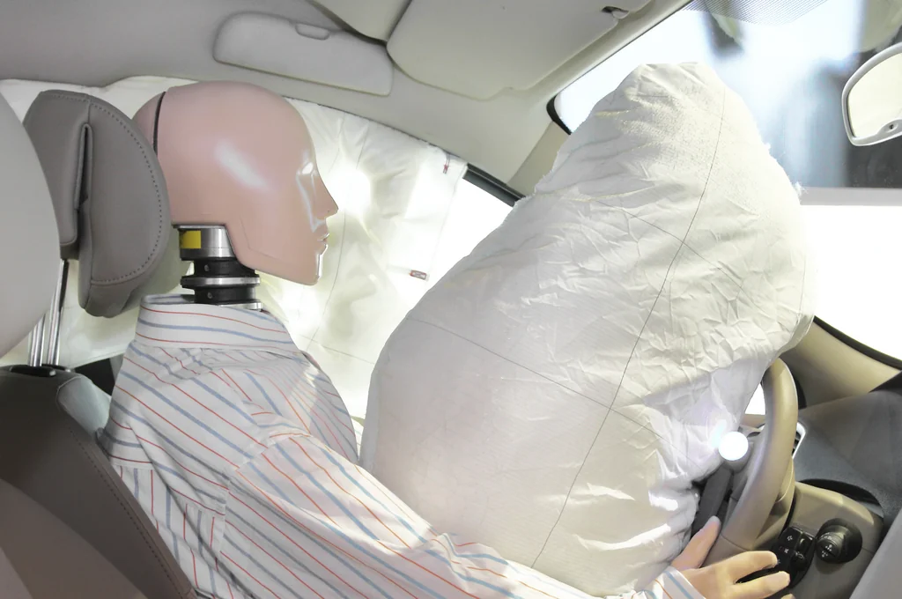{kind=link}
Avtanden mellom foraksel (forhjulene) og bakaksel (bakhjulene) på et kjøretøy. I bildeeksempelet ser du akselavstanden på en bil. Avtanden mellom foraksel (forhjulene) og bakaksel (bakhjulene) på et kjøretøy. I bildeeksempelet ser du akselavstanden på en bil.
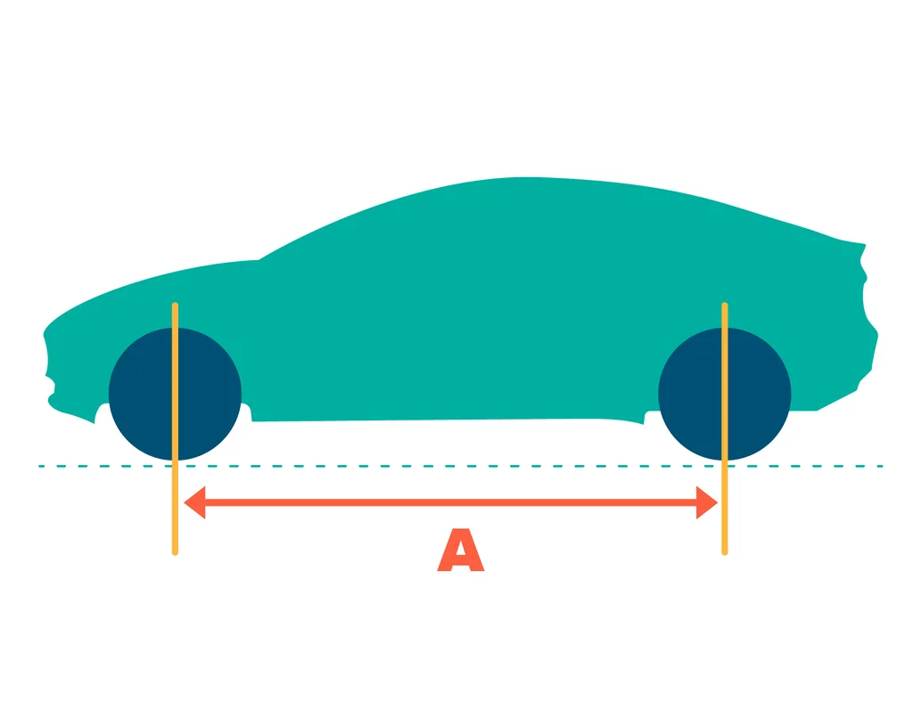{kind=link}
Med aktiv sikkerhet mener vi utstyr eller konstruksjoner i bilen som skal hjelpe deg til å handle rett og å forebygge ulykker. ABS-bremser og antiskrens er eksempler på aktive sikkerhetssystemer. Med aktiv sikkerhet mener vi utstyr eller konstruksjoner i bilen som skal hjelpe deg til å handle rett og å forebygge ulykker. ABS-bremser og antiskrens er eksempler på aktive sikkerhetssystemer.
Aktpågivende – Vær konsentrert og oppmerksom og følge nøye med i trafikken. Aktpågivende – Vær konsentrert og oppmerksom og følge nøye med i trafikken.
Aktuell totalvekt er vekten kjøretøyet har ved en vektkontroll. Altså det kjøretøyet *faktisk* veier, med alt inkludert. Aktuell totalvekt er vekten kjøretøyet har ved en vektkontroll. Altså det kjøretøyet faktisk veier, med alt inkludert.
At et sted er åpent for alminnelig ferdsel vil si at det normalt er trafikk der, selv om det kanskje ikke er åpent for alle til enhver tid. At et sted er åpent for alminnelig ferdsel vil si at det normalt er trafikk der, selv om det kanskje ikke er åpent for alle til enhver tid.
Anbefalt fartsgrense kan settes sammen med et fareskilt og gir en anbefaling på høyeste fart du bør holde forbi faren. Brukes typisk når det varsles skarpe svinger. Anbefalt fartsgrense kan settes sammen med et fareskilt og gir en anbefaling på høyeste fart du bør holde forbi faren. Brukes typisk når det varsles skarpe svinger.
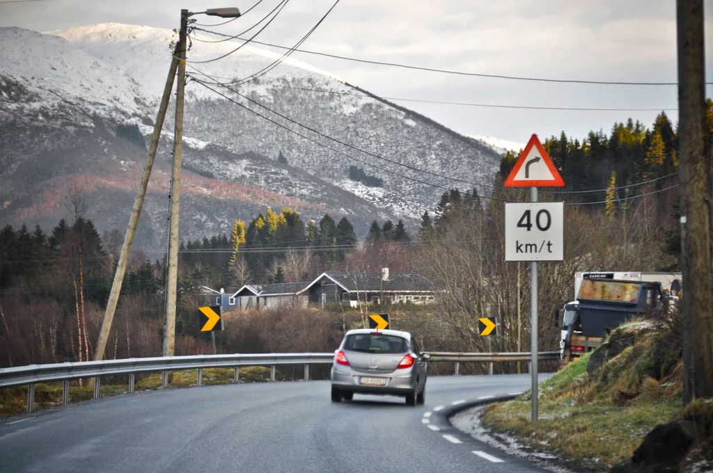{kind=link}
Automatiserte handlinger er handlinger man gjør uten å tenke over det. Automatiserte handlinger er handlinger man gjør uten å tenke over det.
Det er viktig å automatisere kjøretekniske ting som akselerasjon og brems, slik at man kan bruke konsentrasjonen sin på det som skjer i trafikken. Det er viktig å automatisere kjøretekniske ting som akselerasjon og brems, slik at man kan bruke konsentrasjonen sin på det som skjer i trafikken.
Automatisering er viktig i føreropplæringen. Det oppnås gjennom mengdetrening. Automatisering er viktig i føreropplæringen. Det oppnås gjennom mengdetrening.
Kjøretøy som kjører av seg selv, uten hjelp fra fører. Kjøretøy som kjører av seg selv, uten hjelp fra fører.
Å bestemme seg for hvordan man vil handle. Å bestemme seg for hvordan man vil handle.
Også kalt retardasjonsfelt eller fartsreduksjonsfelt. Avkjøringsfelt leder trafikken fra en hovedvei og over på en sekundærvei. Først kjører trafikken over i retardasjonsfeltet som går over i en avkjøringsrampe som leder trafikken videre over på sekundærveien. Feltet gjør det mulig å forlate en hovedvei uten å forstyrre trafikkflyten, og dermed tilpasse farten til fartsnivået på sekundærveien. Også kalt retardasjonsfelt eller fartsreduksjonsfelt. Avkjøringsfelt leder trafikken fra en hovedvei og over på en sekundærvei. Først kjører trafikken over i retardasjonsfeltet som går over i en avkjøringsrampe som leder trafikken videre over på sekundærveien. Feltet gjør det mulig å forlate en hovedvei uten å forstyrre trafikkflyten, og dermed tilpasse farten til fartsnivået på sekundærveien.
Bilens baklys skal være røde. Det er ikke påbudt med baklys når det er lyst, men de fleste biler har baklys på hele tiden. Nyere biler har baklys som skrur seg på når det blir mørkt. Bilens baklys skal være røde. Det er ikke påbudt med baklys når det er lyst, men de fleste biler har baklys på hele tiden. Nyere biler har baklys som skrur seg på når det blir mørkt.
Bilens batteri leverer strøm til alt på bilen som drives av elektrisitet, for eksempel lys, elektriske vinduer, oppvarming, lufteanlegg og vindusviskere. Bilen trenger også batteri for å starte. Bilens batteri leverer strøm til alt på bilen som drives av elektrisitet, for eksempel lys, elektriske vinduer, oppvarming, lufteanlegg og vindusviskere. Bilen trenger også batteri for å starte.
Når du skal bestemme deg for hva du skal gjøre går du gjennom en beslutningsprosess. Denne kan være både bevisst eller ubevisst. Når du skal bestemme deg for hva du skal gjøre går du gjennom en beslutningsprosess. Denne kan være både bevisst eller ubevisst.
Den som dømmes til betinget fengsel slipper å sone i fengsel, forutsatt at han oppfyller visse betingelser. Den som dømmes til betinget fengsel slipper å sone i fengsel, forutsatt at han oppfyller visse betingelser.
Den som dømmes til ubetinget fengsel, må sone straffen i fengsel. Den som dømmes til ubetinget fengsel, må sone straffen i fengsel.
Bevegelsesenergien avhenger av to ting: vekt og hastighet. Den har mye å si for bilkjøring. Bevegelsesenergien avhenger av to ting: vekt og hastighet. Den har mye å si for bilkjøring.
Bevegelsesenergien endres med kvadratet av fartsendringen – det vil si, at om farten dobles firedobles bevegelsesenergien. Bevegelsesenergien endres med kvadratet av fartsendringen – det vil si, at om farten dobles firedobles bevegelsesenergien.
Bremselengden er også en funksjon av bevegelsesenergien. Derfor vil også bremselengden firedobles når farten dobles. Bremselengden er også en funksjon av bevegelsesenergien. Derfor vil også bremselengden firedobles når farten dobles.
Blending er en forbigående nedsettelse av synsevnen som inntrer når øynene utsettes for lys som er vesentlig sterkere enn det de er innstilt for. Dette skjer typisk når man ser rett inn i møtende bils fjernlys. Blending er en forbigående nedsettelse av synsevnen som inntrer når øynene utsettes for lys som er vesentlig sterkere enn det de er innstilt for. Dette skjer typisk når man ser rett inn i møtende bils fjernlys.
Blindsonen er de områdene du ikke kan se i speilene fra førersetet. Blindsonen er de områdene du ikke kan se i speilene fra førersetet.
I personbil er det to store blindsoner på hver side av speilet, som du må sjekke ved å se ut av vinduet. Disse må du ha oversikt over ved filskifte. I personbil er det to store blindsoner på hver side av speilet, som du må sjekke ved å se ut av vinduet. Disse må du ha oversikt over ved filskifte.

Bot er et forelegg som ikke er forenklet, og dermed blir registrert i bøteregisteret. Bot er et forelegg som ikke er forenklet, og dermed blir registrert i bøteregisteret.
Bremsekraftforsterkeren gjør at kraften du legger på bremsepedalen blir forsterket, slik at bremsen nede ved hjulene får ekstra kraft til å bremse. Hvis bremsekraftforsterkeren ikke fungerer får ikke bremsene ekstra kraft, og da må du tråkke inn bremsen mye hardere for å få nok bremseeffekt. Bremsekraftforsterkeren gjør at kraften du legger på bremsepedalen blir forsterket, slik at bremsen nede ved hjulene får ekstra kraft til å bremse. Hvis bremsekraftforsterkeren ikke fungerer får ikke bremsene ekstra kraft, og da må du tråkke inn bremsen mye hardere for å få nok bremseeffekt.
Bilen har av sikkerhetshensyn to bremsekretser. Hvis en bremsekrets blir skadet, vil bilen fortsatt ha en bremsekrets å bremse på. Da vil bremsepedalen ta dypere og det blir nødvendig med et høyere pedaltrykk for å få normal bremseeffekt. Bilen har av sikkerhetshensyn to bremsekretser. Hvis en bremsekrets blir skadet, vil bilen fortsatt ha en bremsekrets å bremse på. Da vil bremsepedalen ta dypere og det blir nødvendig med et høyere pedaltrykk for å få normal bremseeffekt.
Strekningen bilen beveger seg, fra du begynner å bremse til bilen har stanset, kalles bremselengde. Bremselengden påvirkes av dekkens veigrep, bilens bevegelsesenergi og hvor hardt du tråkker på bremsen. Strekningen bilen beveger seg, fra du begynner å bremse til bilen har stanset, kalles bremselengde. Bremselengden påvirkes av dekkens veigrep, bilens bevegelsesenergi og hvor hardt du tråkker på bremsen.
Bremselysene skal være røde og skrur seg på når du tråkker inn bremsen, slik at bilene bak kan se at du sakker ned farten. Bremselysene skal være røde og skrur seg på når du tråkker inn bremsen, slik at bilene bak kan se at du sakker ned farten.
Bremsevæsken er viktig for at pedalen skal aktivere bremsene. Har du ikke bremsevæske, fungerer ikke bremsene. Bilen bruker ikke opp bremsevæske, så om det er lite bremsevæske kan det være noe galt med bilen, som slitte bremseklosser eller lekkasje i kretsen. Bilen bør tas til verksted. Bremsevæsken er viktig for at pedalen skal aktivere bremsene. Har du ikke bremsevæske, fungerer ikke bremsene. Bilen bruker ikke opp bremsevæske, så om det er lite bremsevæske kan det være noe galt med bilen, som slitte bremseklosser eller lekkasje i kretsen. Bilen bør tas til verksted.
CE-merket finnes på en rekke ulike produkter, på alt fra leketøy til maskiner, medisinsk utstyr og byggevarer. CE-godkjent betyr at produktet anses å oppfylle krav fra myndighetene som er gitt i direktiv eller forordning. CE-merket finnes på en rekke ulike produkter, på alt fra leketøy til maskiner, medisinsk utstyr og byggevarer. CE-godkjent betyr at produktet anses å oppfylle krav fra myndighetene som er gitt i direktiv eller forordning.
Clutch eller kobling, er en mekanisk innretning som gjør at en roterende del kan frikobles fra en annen. Slike koblinger finnes i drivverket på biler, der de sitter mellom motoren og girkassen. De fleste bilkoblinger opereres med en pedal. Clutch eller kobling, er en mekanisk innretning som gjør at en roterende del kan frikobles fra en annen. Slike koblinger finnes i drivverket på biler, der de sitter mellom motoren og girkassen. De fleste bilkoblinger opereres med en pedal.
Med dekkets dimensjoner mener vi størrelsen på dekket. Hvilken dimensjon og bæreevne bilen din må ha på dekkene står i vognkortet. Med dekkets dimensjoner mener vi størrelsen på dekket. Hvilken dimensjon og bæreevne bilen din må ha på dekkene står i vognkortet.
Distraksjoner er ulike ting som forstyrrer deg når du kjører og fører til at du mister fokus på kjøringen og blir uoppmerksom i trafikken. Fikling med GPS, snakke med passasjerer i baksetet eller en veps som forviller seg inn i bilen er eksempler på ulike typer distraksjoner. Distraksjoner er ulike ting som forstyrrer deg når du kjører og fører til at du mister fokus på kjøringen og blir uoppmerksom i trafikken. Fikling med GPS, snakke med passasjerer i baksetet eller en veps som forviller seg inn i bilen er eksempler på ulike typer distraksjoner.
Drivstoff vil si hvor kjøretøyet henter energi fra, f.eks. bensin, diesel, elektrisitet, gass, metanol eller hydrogen. Drivstoff vil si hvor kjøretøyet henter energi fra, f.eks. bensin, diesel, elektrisitet, gass, metanol eller hydrogen.
Strømkildene til bilens elektriske anlegg er batteriet og dynamoen. Strømkildene til bilens elektriske anlegg er batteriet og dynamoen.
Dynamoen leverer strøm så lenge motoren er i gang. Batteriet leverer strøm når motoren ikke er i gang, og dets viktigste oppgave er å starte motoren. Dynamoen leverer strøm så lenge motoren er i gang. Batteriet leverer strøm når motoren ikke er i gang, og dets viktigste oppgave er å starte motoren.
Dynamoen drives av en drivrem fra motorakselen. Dynamoen drives av en drivrem fra motorakselen.
Dødgang er hvor mange cm man kan vri på rattet før hjulene reagerer. Mye dødgang gjør styringen unøyaktig, og det er ikke tillatt med mer enn 3 cm dødgang. Det betyr at hjulene senest skal begynne å svinge når du har vridd rattet 3 cm til en av sidene. Dødgang er hvor mange cm man kan vri på rattet før hjulene reagerer. Mye dødgang gjør styringen unøyaktig, og det er ikke tillatt med mer enn 3 cm dødgang. Det betyr at hjulene senest skal begynne å svinge når du har vridd rattet 3 cm til en av sidene.
ESP står for elektronisk stabilitetskontroll. Det kalles ofte antiskrens. ESP står for elektronisk stabilitetskontroll. Det kalles ofte antiskrens.
Når veigrepet er dårlig vil ESP justere brems og motorkraft slik at bilen får hjelp til å holde stø kurs. Når veigrepet er dårlig vil ESP justere brems og motorkraft slik at bilen får hjelp til å holde stø kurs.
Kalles og periodisk kjøretøykontroll (PKK) og er en obligatorisk og regelmessig kontroll for alle kjøretøy, med unntak av tohjulinger. Kalles og periodisk kjøretøykontroll (PKK) og er en obligatorisk og regelmessig kontroll for alle kjøretøy, med unntak av tohjulinger.
Neste frist for EU-kontroll beregnes alltid ut fra dato for når du tok hovedkontrollen, og ikke for når du eventuelt tok etterkontroll. Tar du hovedkontrollen mindre enn to måneder før fristen din går ut, vil den opprinnelige fristen bli stående som utgangspunkt for neste EU-kontroll. Neste frist for EU-kontroll beregnes alltid ut fra dato for når du tok hovedkontrollen, og ikke for når du eventuelt tok etterkontroll. Tar du hovedkontrollen mindre enn to måneder før fristen din går ut, vil den opprinnelige fristen bli stående som utgangspunkt for neste EU-kontroll.
Egenvekten til et kjøretøy er det kjøretøyet veier. Det står oppgitt i vognkortet. Egenvekten til et kjøretøy er det kjøretøyet veier. Det står oppgitt i vognkortet.

Ved eierskifte skal det leveres salgsmelding (eierskifte) til Statens vegvesen. Kjøper må også omregistrere kjøretøyet og betale omregistreringsavgift. Ved eierskifte skal det leveres salgsmelding (eierskifte) til Statens vegvesen. Kjøper må også omregistrere kjøretøyet og betale omregistreringsavgift.
Fareskilt varsler om særlig fare på en strekning. Det kan være et varsel om uregelmessigheter i veien som skarpe svinger, glatt kjørebane eller ujevn vei. Fareskilt varsler også om trafikanter du må se spesielt opp for, dyr som kan befinne seg i veien eller andre tenkelige farer. Fareskilt varsler om særlig fare på en strekning. Det kan være et varsel om uregelmessigheter i veien som skarpe svinger, glatt kjørebane eller ujevn vei. Fareskilt varsler også om trafikanter du må se spesielt opp for, dyr som kan befinne seg i veien eller andre tenkelige farer.
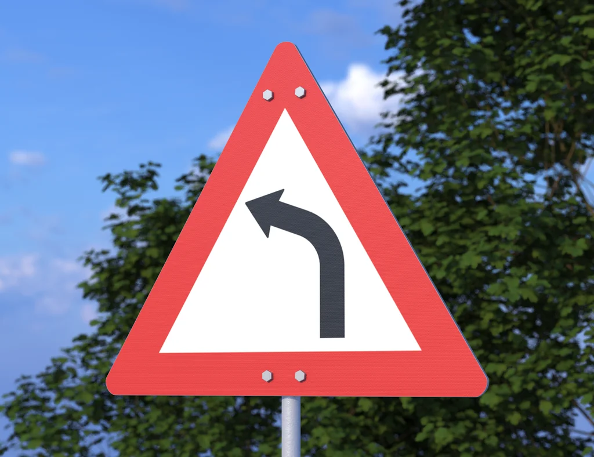{kind=link}
En rekke farlige stoffer kan medføre en sikkerhetsutfordring for liv, helse, miljø eller materiell, noe som gjør det risikofylt å håndtere og transportere. Transport av farlig gods er derfor underlagt både nasjonale forskrifter, og internasjonale sikkerhetskrav gjennom forskjellige transportregelverk. En rekke farlige stoffer kan medføre en sikkerhetsutfordring for liv, helse, miljø eller materiell, noe som gjør det risikofylt å håndtere og transportere. Transport av farlig gods er derfor underlagt både nasjonale forskrifter, og internasjonale sikkerhetskrav gjennom forskjellige transportregelverk.
Også kalt fartstilpassing. Å tilpasse farten etter forholdene og trafikksituasjonen. Også kalt fartstilpassing. Å tilpasse farten etter forholdene og trafikksituasjonen.
Når man tror/føler man holder lavere fart enn det man egentlig gjør. Når man tror/føler man holder lavere fart enn det man egentlig gjør.
I Norge har vi to generelle fartsgrenser, som gjelder dersom ikke trafikkskilt sier noe annet. Når særskilte fartsgrenser oppheves, vil de generelle fartsgrensene gjelde. I tettbygd strøk er den generelle fartsgrensen 50 km/t, utenfor tettbygd strøk er den 80 km/t. I Norge har vi to generelle fartsgrenser, som gjelder dersom ikke trafikkskilt sier noe annet. Når særskilte fartsgrenser oppheves, vil de generelle fartsgrensene gjelde. I tettbygd strøk er den generelle fartsgrensen 50 km/t, utenfor tettbygd strøk er den 80 km/t.
Kalles også akselerasjonsfelt eller påkjøringsfelt. Fartsøkningsfelt leder trafikk fra en sekundærvei og over på en hovedvei. Fra sekundærveien kjører trafikken først på en påkjøringsrampe som leder trafikken til samme plan som hovedveien. Når påkjøringsrampen er i samme plan som hovedveien, starter fartsøkningsfeltet. Her kan trafikken øke hastigheten i samsvar med fartsnivået på hovedveien og deretter flette med hovedveitrafikken. Kalles også akselerasjonsfelt eller påkjøringsfelt. Fartsøkningsfelt leder trafikk fra en sekundærvei og over på en hovedvei. Fra sekundærveien kjører trafikken først på en påkjøringsrampe som leder trafikken til samme plan som hovedveien. Når påkjøringsrampen er i samme plan som hovedveien, starter fartsøkningsfeltet. Her kan trafikken øke hastigheten i samsvar med fartsnivået på hovedveien og deretter flette med hovedveitrafikken.
Et system som registrerer oppmerkingen i veibanen ved hjelp av et digitalt kamera og holder bilen riktig plassert i kjørefeltet ved hjelp av små rattutslag. Systemet tar over rattet så du slipper å styre. Et system som registrerer oppmerkingen i veibanen ved hjelp av et digitalt kamera og holder bilen riktig plassert i kjørefeltet ved hjelp av små rattutslag. Systemet tar over rattet så du slipper å styre.
Bilens fjernlys skal lyse hvitt eller gult, minst 100 meter foran bilen. Man bruker gjerne fjernlysene når man kjører på vei uten gatelykter. Bilens fjernlys skal lyse hvitt eller gult, minst 100 meter foran bilen. Man bruker gjerne fjernlysene når man kjører på vei uten gatelykter.
Når regelen for fletting gjelder har kjørende i høyre felt og akselerasjonsfeltet gjensidig vikeplikt. Det vil si at kjørende i begge felt skal vike for trafikanter som ligger foran dem når de to kjørefeltene blir til ett kjørefelt. Når regelen for fletting gjelder har kjørende i høyre felt og akselerasjonsfeltet gjensidig vikeplikt. Det vil si at kjørende i begge felt skal vike for trafikanter som ligger foran dem når de to kjørefeltene blir til ett kjørefelt.
Som sjåfør vil du mange ganger befinne deg i situasjoner der du må vurdere å gjøre en forbikjøring. Derfor er det viktig å forstå faremomenter ved forbikjøring og innarbeide gode rutiner for å vurdere om og hvordan du vil gjøre en forbikjøring. Les mer om forbikjøring i kurset. Som sjåfør vil du mange ganger befinne deg i situasjoner der du må vurdere å gjøre en forbikjøring. Derfor er det viktig å forstå faremomenter ved forbikjøring og innarbeide gode rutiner for å vurdere om og hvordan du vil gjøre en forbikjøring. Les mer om forbikjøring i kurset.
Forbikjøringsstrekningen er strekningen du tilbakelegger når du foretar en forbikjøring. Fra du kjører bilen ut fra kjørefeltet ditt til du er tilbake i kjørefeltet ditt. Forbikjøringsstrekningen er strekningen du tilbakelegger når du foretar en forbikjøring. Fra du kjører bilen ut fra kjørefeltet ditt til du er tilbake i kjørefeltet ditt.
Forenklet forelegg kan ilegges av politiet for ulike trafikkforseelser som bl.a. fartsovertredelser, kjøring i strid med visse trafikkskilt/veioppmerking, kjøring mot rødt lys. Forenklet forelegg kan ilegges av politiet for ulike trafikkforseelser som bl.a. fartsovertredelser, kjøring i strid med visse trafikkskilt/veioppmerking, kjøring mot rødt lys.
Et forkjørskryss er et spesielt farlig veikryss som er merket med skiltet «forkjørskryss». Kjører du på veien der skiltet er satt opp forteller det deg at kjørende som kommer fra sidevei eller kryssende vei er pålagt vikeplikt gjennom vikepliktskilt eller stoppskilt. Et forkjørskryss er et spesielt farlig veikryss som er merket med skiltet «forkjørskryss». Kjører du på veien der skiltet er satt opp forteller det deg at kjørende som kommer fra sidevei eller kryssende vei er pålagt vikeplikt gjennom vikepliktskilt eller stoppskilt.
En forkjørsvei er en vei som er merket med skiltet «forkjørsvei». Kjører du på en forkjørsvei er kjørende som kommer fra sidevei eller kryssende vei pålagt vikeplikt gjennom vikepliktskilt eller stoppskilt. En forkjørsvei er en vei som er merket med skiltet «forkjørsvei». Kjører du på en forkjørsvei er kjørende som kommer fra sidevei eller kryssende vei pålagt vikeplikt gjennom vikepliktskilt eller stoppskilt.

At et kjøretøy er i forskriftsmessig stand betyr at det oppfyller kjøretøyforskriftens krav. Altså, at alt av funksjoner fungerer og er slik det skal være – for eksempel lys, dekktrykk og speil. At et kjøretøy er i forskriftsmessig stand betyr at det oppfyller kjøretøyforskriftens krav. Altså, at alt av funksjoner fungerer og er slik det skal være – for eksempel lys, dekktrykk og speil.
Forstillingen vil si forhjulene på bilen, inkludert aksel, oppheng, styremekanisme, bremser, fjæring, osv. Forstillingen vil si forhjulene på bilen, inkludert aksel, oppheng, styremekanisme, bremser, fjæring, osv.
Skal et kjøretøy brukes må det være i forsvarlig stand. Forsvarlig stand betyr at kjøretøyet er trafikksikkert. Hvis du for eksempel har en alvorlig bremsefeil eller bremselysene ikke fungerer er ikke kjøretøyet i forsvarlig stand. Skal et kjøretøy brukes må det være i forsvarlig stand. Forsvarlig stand betyr at kjøretøyet er trafikksikkert. Hvis du for eksempel har en alvorlig bremsefeil eller bremselysene ikke fungerer er ikke kjøretøyet i forsvarlig stand.
Kjøretøyet kan være i forsvarlig stand selv om det ikke er i forskriftsmessig stand. For eksempel kan du kjøre bil med ødelagt frontlykt på dagtid og i godt lys, selv om en slik bil ikke er i forskriftsmessig stand. Men – fiks lykten så fort du kan. Kjøretøyet kan være i forsvarlig stand selv om det ikke er i forskriftsmessig stand. For eksempel kan du kjøre bil med ødelagt frontlykt på dagtid og i godt lys, selv om en slik bil ikke er i forskriftsmessig stand. Men – fiks lykten så fort du kan.
Fortau er i trafikkreglene definert som et eget fysisk «anlegg» for gående, som er skilt fra kjørebanen med kantstein. Fortau er i trafikkreglene definert som et eget fysisk «anlegg» for gående, som er skilt fra kjørebanen med kantstein.
**Rød** betyr at gående ikke må begynne kryssing av kjørebanen hvis dette vil være til hinder for kjørende, eller innebære fare. Gående som allerede er kommet ut i kjørebanen kan fortsette kryssingen. Rød betyr at gående ikke må begynne kryssing av kjørebanen hvis dette vil være til hinder for kjørende, eller innebære fare. Gående som allerede er kommet ut i kjørebanen kan fortsette kryssingen.
**Grønn** betyr at gående kan krysse kjørebanen. Grønn betyr at gående kan krysse kjørebanen.
**Blinkende, grønt signal** varsler at signalet om kort tid vil skifte til rødt, og har samme betydning som rødt signal. Blinkende, grønt signal varsler at signalet om kort tid vil skifte til rødt, og har samme betydning som rødt signal.
God samhandling mellom trafikanter gjennom valg av fart, filvalg og feltskifter, forbikjøringer og en tydelig kjørestil, gir en god fremkommelighet i trafikken. Når samhandlingen er dårlig flyter trafikken tregere og fremkommeligheten reduseres. God samhandling mellom trafikanter gjennom valg av fart, filvalg og feltskifter, forbikjøringer og en tydelig kjørestil, gir en god fremkommelighet i trafikken. Når samhandlingen er dårlig flyter trafikken tregere og fremkommeligheten reduseres.
For å lette fremkommeligheten for noen spesielle trafikanter krever trafikkreglene at vi gir dem fri vei. Å gi fri vei betyr at du skal gjøre det du kan for å slippe dem frem og redusere risikoen for ulykker ved å svinge inn til siden og eventuelt stanse. For å lette fremkommeligheten for noen spesielle trafikanter krever trafikkreglene at vi gir dem fri vei. Å gi fri vei betyr at du skal gjøre det du kan for å slippe dem frem og redusere risikoen for ulykker ved å svinge inn til siden og eventuelt stanse.
Fri veistrekning består av forbikjøringstrekningen din, en sikkerhetsmargin tilsvarende forbikjøringstrekningen og møtende trafikks tilbakelagte strekning. Fri veistrekning består av forbikjøringstrekningen din, en sikkerhetsmargin tilsvarende forbikjøringstrekningen og møtende trafikks tilbakelagte strekning.

Føreforhold handler om veiens tilstand og veigrep. Altså hvorvidt veien er tørr, glatt, humpete, våt, osv. Føreforhold handler om veiens tilstand og veigrep. Altså hvorvidt veien er tørr, glatt, humpete, våt, osv.
Dette er ulike systemer i kjøretøyet som skal hjelpe deg med ulike momenter i kjøringen. Filholder og cruise control er typiske eksempler på førerstøttesystemer du finner i de fleste nyere biler. Dette er ulike systemer i kjøretøyet som skal hjelpe deg med ulike momenter i kjøringen. Filholder og cruise control er typiske eksempler på førerstøttesystemer du finner i de fleste nyere biler.
Et gangfelt er et kryssingssted for gående. Gangfelt kan være skiltet eller oppmerket i veibanen (eller begge deler). Et gangfelt er et kryssingssted for gående. Gangfelt kan være skiltet eller oppmerket i veibanen (eller begge deler).

Gangvei og sykkelvei: Vei som ved offentlig trafikkskilt er bestemt for gående, syklende eller kombinert gang- og sykkeltrafikk. Gangvei og sykkelvei er skilt fra annen vei med gressplen, grøft, gjerde, kantstein eller på annen måte. OBS: En sykkelvei er ikke det samme som et sykkelfelt. Gangvei og sykkelvei: Vei som ved offentlig trafikkskilt er bestemt for gående, syklende eller kombinert gang- og sykkeltrafikk. Gangvei og sykkelvei er skilt fra annen vei med gressplen, grøft, gjerde, kantstein eller på annen måte. OBS: En sykkelvei er ikke det samme som et sykkelfelt.
Et gatetun er en gate i boligstrøk, hovedsaklig beregnet for gående. Gatetun har ofte avgrensede fellesarealer med beplanting, lekeplass og benker. Gatetun er skiltet spesielt med *gatetun-skilt*. Et gatetun er en gate i boligstrøk, hovedsaklig beregnet for gående. Gatetun har ofte avgrensede fellesarealer med beplanting, lekeplass og benker. Gatetun er skiltet spesielt med gatetun-skilt.
På gatetun må kjørende holde gangfart, og alltid vike for gående. På gatetun må kjørende holde gangfart, og alltid vike for gående.

Gebyr er ikke en straffereaksjon, og kan ilegges av politiet, Statens vegvesen ved regionvegkontoret eller av kommunale parkeringsvakter. Gebyr er ikke en straffereaksjon, og kan ilegges av politiet, Statens vegvesen ved regionvegkontoret eller av kommunale parkeringsvakter.
Gebyr kan gis ved en del mindre alvorlige overtredelser av trafikklovgivningen. Det gis blant annet hvis førerkortet er glemt igjen hjemme, ved manglende bruk av bilbelte, ved kjøring med dekk med for liten mønsterdybde, samt for overlasting. Gebyr kan gis ved en del mindre alvorlige overtredelser av trafikklovgivningen. Det gis blant annet hvis førerkortet er glemt igjen hjemme, ved manglende bruk av bilbelte, ved kjøring med dekk med for liten mønsterdybde, samt for overlasting.
Vegtrafikklovens § 3 kalles *grunnregler for trafikk.* Loven lyder: Vegtrafikklovens § 3 kalles grunnregler for trafikk. Loven lyder:
*Enhver skal ferdes hensynsfullt og være aktpågivende og varsom så det ikke kan oppstå fare eller voldes skade og slik at annen trafikk ikke unødig blir hindret eller forstyrret.* Enhver skal ferdes hensynsfullt og være aktpågivende og varsom så det ikke kan oppstå fare eller voldes skade og slik at annen trafikk ikke unødig blir hindret eller forstyrret.
*Vegfarende skal også vise hensyn mot dem som bor eller oppholder seg ved vegen*. Vegfarende skal også vise hensyn mot dem som bor eller oppholder seg ved vegen.
Dette er grunnlaget for all atferd i trafikken. Mange blir straffet for brudd på denne. Dette er grunnlaget for all atferd i trafikken. Mange blir straffet for brudd på denne.
En gågate er en gate som er skiltet spesielt med *gågate-skilt*. I gågate kan man kun kjøre i gangfart, og parkering er bare lov på egne oppmerkede plasser. En gågate er en gate som er skiltet spesielt med gågate-skilt. I gågate kan man kun kjøre i gangfart, og parkering er bare lov på egne oppmerkede plasser.

Forkortelse for hjerte- og lungeredning. HLR gjennomføres som en serie kompresjoner av brystet og innblåsinger gitt i kombinasjon som del av behandling av hjertestans hos en person. Forkortelse for hjerte- og lungeredning. HLR gjennomføres som en serie kompresjoner av brystet og innblåsinger gitt i kombinasjon som del av behandling av hjertestans hos en person.
Utvidelse av veibanen hvor et kjøretøy som ellers ville vært til hinder for øvrig trafikk, kan plasseres. Skal ikke brukes til vanlig parkering. Utvidelse av veibanen hvor et kjøretøy som ellers ville vært til hinder for øvrig trafikk, kan plasseres. Skal ikke brukes til vanlig parkering.
Hensynsfull – Ta hensyn til andre trafikanters behov og ikke bare dine egne. Hensynsfull – Ta hensyn til andre trafikanters behov og ikke bare dine egne.
Som bilfører har du et stort ansvar for at passering av hest skjer uten fare. For å passere hesten på forsvarlig vis bør du: Som bilfører har du et stort ansvar for at passering av hest skjer uten fare. For å passere hesten på forsvarlig vis bør du:
Redusere farten når du nærmer deg. Redusere farten når du nærmer deg.
Forsikre deg om at hest og rytter har oppdaget deg. Forsikre deg om at hest og rytter har oppdaget deg.
Stanse og vente hvis hesten virker skremt eller ukontrollert. Stanse og vente hvis hesten virker skremt eller ukontrollert.
Unngå brå bevegelser – kjør forbi hesten stille og rolig. Unngå brå bevegelser – kjør forbi hesten stille og rolig.
Vei som er beregnet for høyere hastigheter. Brukes gjerne om veier hvor fartsgrensen er 60 km/t eller høyere. Vei som er beregnet for høyere hastigheter. Brukes gjerne om veier hvor fartsgrensen er 60 km/t eller høyere.
Kantlinjen er linjen som markerer starten på veiskulderen. Det er altså én kantlinje på hver side av kjørebanen. De to hvite heltrukne linjene på bildet er kantlinjer. Kantlinjen er linjen som markerer starten på veiskulderen. Det er altså én kantlinje på hver side av kjørebanen. De to hvite heltrukne linjene på bildet er kantlinjer.
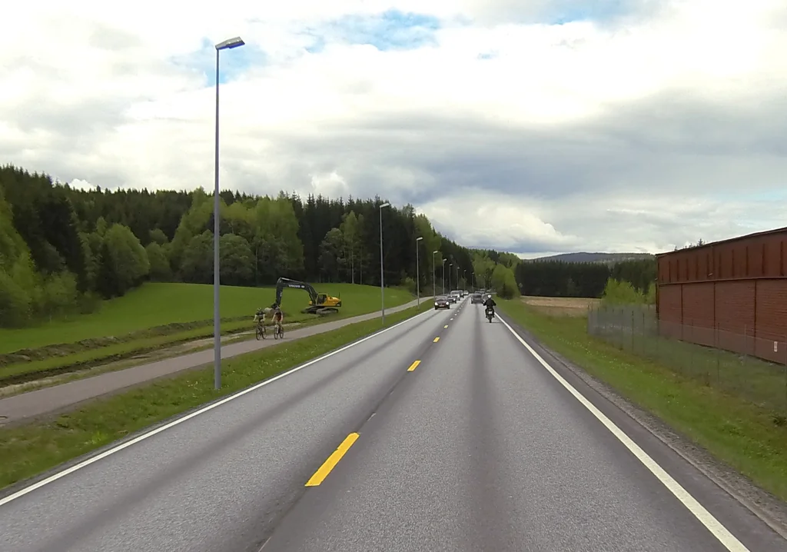{kind=link}
Kantstolpe er de små hvite stakene som står langs mange norske veier. De har refleks, og regnes som markeringsskilt. Kantstolpe er de små hvite stakene som står langs mange norske veier. De har refleks, og regnes som markeringsskilt.
{kind=link}
Bilens ytre deler. Karosseriet er som regel laget av stål, aluminium eller plast. Bilens ytre deler. Karosseriet er som regel laget av stål, aluminium eller plast.
Katalysatoren er en del av bilens eksosanlegg, og bidrar til redusert utslipp av skadelige avgasser. Katalysatoren oppnår driftstemperatur først etter seks kjørte kilometer. Siden 1989 er katalysator påbudt i alle nye personbiler i Norge. Katalysatoren er en del av bilens eksosanlegg, og bidrar til redusert utslipp av skadelige avgasser. Katalysatoren oppnår driftstemperatur først etter seks kjørte kilometer. Siden 1989 er katalysator påbudt i alle nye personbiler i Norge.
Også kjent som nummerskilt, bilskilt eller registreringsnummer. Også kjent som nummerskilt, bilskilt eller registreringsnummer.
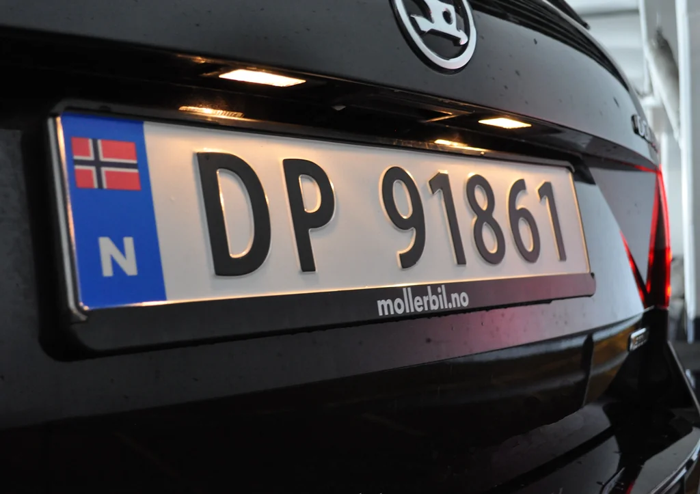{kind=link}
Kjølevæske er også kjent som frostvæske og brukes for å hindre overoppheting på grunn av de høye temperaturene i forbindelse med forbrenningsmotorer. Den sørger også for at motorens kjølesystem ikke fryser ved kuldegrader. Kjølevæske er også kjent som frostvæske og brukes for å hindre overoppheting på grunn av de høye temperaturene i forbindelse med forbrenningsmotorer. Den sørger også for at motorens kjølesystem ikke fryser ved kuldegrader.

Kjørebanen er den del av veien som er bestemt for vanlig kjøring (området mellom kantlinjene). Kjørebanen er den del av veien som er bestemt for vanlig kjøring (området mellom kantlinjene).
Hvordan bilen oppfører seg på veien, hvor lett det er å styre den. Hvordan bilen oppfører seg på veien, hvor lett det er å styre den.
Et kjørefelt er hvert enkelt av de langsgående felt som en kjørebane er delt i ved oppmerking, eller som er bredt nok for trafikk med en bilrekke. Et kjørefelt er hvert enkelt av de langsgående felt som en kjørebane er delt i ved oppmerking, eller som er bredt nok for trafikk med en bilrekke.
En kjørefeltlinje består av korte gule/hvite streker med lange mellomrom (3 ganger så lange som strekene). Linjen varsler at forbikjøring trygt kan gjennomføres så lenge det ikke er motgående trafikk. En kjørefeltlinje består av korte gule/hvite streker med lange mellomrom (3 ganger så lange som strekene). Linjen varsler at forbikjøring trygt kan gjennomføres så lenge det ikke er motgående trafikk.
Gul kjørefeltlinje skiller mellom felt med motgående kjøreretninger. Hvit kjørefeltlinje skiller mellom felt med samme kjøreretning. Gul kjørefeltlinje skiller mellom felt med motgående kjøreretninger. Hvit kjørefeltlinje skiller mellom felt med samme kjøreretning.
Kjørefeltsignal styrer bruken av kjørefelt. Kjørefeltsignal styrer bruken av kjørefelt.
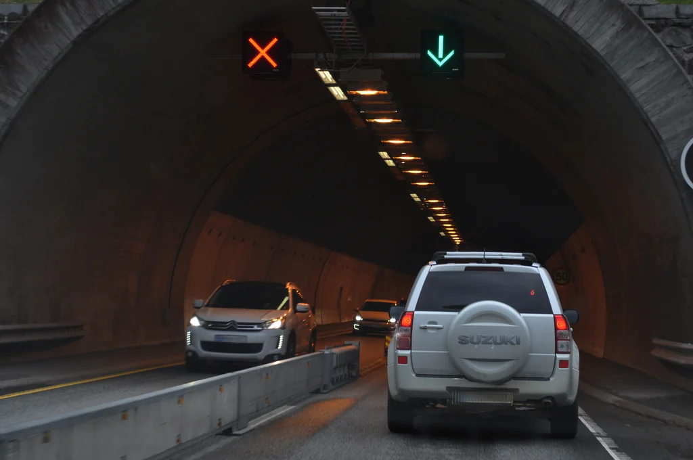{kind=link}
I Norge er det påbudt med kjørelys, også på dagtid. Kjørelys er gule eller hvite lys foran, som skal gjøre deg synligere for andre trafikanter. Noen biler er utstyrt med egne kjørelys, og noen biler bruker nærlysene som kjørelys. I Norge er det påbudt med kjørelys, også på dagtid. Kjørelys er gule eller hvite lys foran, som skal gjøre deg synligere for andre trafikanter. Noen biler er utstyrt med egne kjørelys, og noen biler bruker nærlysene som kjørelys.
Kjøreprosessen beskriver hva du som sjåfør gjør i trafikken fra en ting skjer til du har reagert og respondert. Kjøreprosessen beskriver hva du som sjåfør gjør i trafikken fra en ting skjer til du har reagert og respondert.
1 - Du sanser – Øyet ditt mottar informasjon, men hjernen har ikke behandlet den ennå. 1 - Du sanser – Øyet ditt mottar informasjon, men hjernen har ikke behandlet den ennå.
2 - Du oppfatter hva du har sanset – Hjernen gjenkjenner hva du ser og hva som skjer. 2 - Du oppfatter hva du har sanset – Hjernen gjenkjenner hva du ser og hva som skjer.
3 - Du avgjør hva du skal gjøre – Du vurderer ulike løsninger for videre handling og velger. 3 - Du avgjør hva du skal gjøre – Du vurderer ulike løsninger for videre handling og velger.
4 - Du handler – Du iverksetter det du har bestemt deg for å gjøre. 4 - Du handler – Du iverksetter det du har bestemt deg for å gjøre.
Et kjøretøy er en "innretning som er bestemt til å kjøre på bakken uten skinner". Følgelig er både sykkel, moped, mc og bil kjøretøy. Merk at mopeder, motorsykler og biler også er definert som motorvogner (kjøretøy som blir drevet fram med motor). Et kjøretøy er en "innretning som er bestemt til å kjøre på bakken uten skinner". Følgelig er både sykkel, moped, mc og bil kjøretøy. Merk at mopeder, motorsykler og biler også er definert som motorvogner (kjøretøy som blir drevet fram med motor).
Et kollektivfelt er et felt som i utgangspunktet er laget for buss eller buss og taxi. Men også elektrisk eller hydrogendrevet motorvogn, tohjuls motorsykkel uten sidevogn, tohjuls moped, sykkel eller uniformert utrykningskjøretøy kan kjøre i kollektivfeltet. Et kollektivfelt er et felt som i utgangspunktet er laget for buss eller buss og taxi. Men også elektrisk eller hydrogendrevet motorvogn, tohjuls motorsykkel uten sidevogn, tohjuls moped, sykkel eller uniformert utrykningskjøretøy kan kjøre i kollektivfeltet.
Et kjøretøys konstruktive hastighet er den høyeste hastigheten et kjøretøy er laget for å kjøre i. Et kjøretøys konstruktive hastighet er den høyeste hastigheten et kjøretøy er laget for å kjøre i.
En traktor med konstruktiv hastighet på 40 km/t er ikke laget for å gå fortere enn 40 km/t. En traktor med konstruktiv hastighet på 40 km/t er ikke laget for å gå fortere enn 40 km/t.
Sted hvor vei krysser eller munner ut i annen vei. Sted hvor vei krysser eller munner ut i annen vei.
Kurve- og tåkelysene foran på bilen skal lyse hvitt eller gult, og de bak skal lyse rødt. Tåkelys er smart når det er dårlig sikt ute, og da kan du bruke de som kjørelys. Men er det klarvær, kan de blende andre trafikanter. Kurve- og tåkelysene foran på bilen skal lyse hvitt eller gult, og de bak skal lyse rødt. Tåkelys er smart når det er dårlig sikt ute, og da kan du bruke de som kjørelys. Men er det klarvær, kan de blende andre trafikanter.
Bremselengden endrer seg med kvadratet av fartsendringen. Hva er kvadratet av fartsendringen? Bremselengden endrer seg med kvadratet av fartsendringen. Hva er kvadratet av fartsendringen?
- Først må vi finne fartsendringen: **ny fart / gammel fart = fartsendring**. Nå har vi fartsendringen – og som vi vet: bremselengden endrer seg med kvadratet av fartsendringen. Først må vi finne fartsendringen: ny fart / gammel fart = fartsendring. Nå har vi fartsendringen – og som vi vet: bremselengden endrer seg med kvadratet av fartsendringen.
- Nå finner vi kvadratet av fartsendringen: da ganger du fartsendringen med seg selv. Tallet du får da er kvadratet av fartsendringen. Nå finner vi kvadratet av fartsendringen: da ganger du fartsendringen med seg selv. Tallet du får da er kvadratet av fartsendringen.
- Så, hva vil det si at bremselengden endrer seg med dette kvadratet? Kvadratet viser hvor mange ganger bremselengden dobles eller reduseres ved fartsendringen. For å finne ny bremselengde må du gange gammel bremselengde med kvadratet. Så, hva vil det si at bremselengden endrer seg med dette kvadratet? Kvadratet viser hvor mange ganger bremselengden dobles eller reduseres ved fartsendringen. For å finne ny bremselengde må du gange gammel bremselengde med kvadratet.
Eksempel!Eksempel!
Kjører i 25 km/t. Bremslengden er 4m. Du øker til 50 km/t. Hva skjer med bremselengden? Fartsendring er: 50 / 25 = 2. Kvadratet av fartsendring er: 2 x 2 = 4. Ny bremselengde er: 4 x 4 = 16 m. Kjører i 25 km/t. Bremslengden er 4m. Du øker til 50 km/t. Hva skjer med bremselengden? Fartsendring er: 50 / 25 = 2. Kvadratet av fartsendring er: 2 x 2 = 4. Ny bremselengde er: 4 x 4 = 16 m.
En bil kjører i 30 km/t, med bremselengde på 10 m. Bilen øker til 70 km/t. Hva skjer med bremselengden? Fartsendring: 70 / 30 = 2,33. Kvadratet av fartsendring er: 2,33 x 2,33 = 5,43. Ny bremselengde er: 10 x 5,43 = 54,3 m. En bil kjører i 30 km/t, med bremselengde på 10 m. Bilen øker til 70 km/t. Hva skjer med bremselengden? Fartsendring: 70 / 30 = 2,33. Kvadratet av fartsendring er: 2,33 x 2,33 = 5,43. Ny bremselengde er: 10 x 5,43 = 54,3 m.
Hva hvis farten reduseres? Det gjøres på samme måte: Bil kjører i 50 km/t, bremselengde er 12 m. Senker farten til 25 km/t. Fartsendringen er: 25 / 50 = 0,5. Kvadratet av fartsendringen er: 0,5 x 0,5 = 0,25. Ny bremselengde: 12 x 0,25 = 3 m. Hva hvis farten reduseres? Det gjøres på samme måte: Bil kjører i 50 km/t, bremselengde er 12 m. Senker farten til 25 km/t. Fartsendringen er: 25 / 50 = 0,5. Kvadratet av fartsendringen er: 0,5 x 0,5 = 0,25. Ny bremselengde: 12 x 0,25 = 3 m.
Kilopond er et begrep fra fysikken. Et trykk på 1 kilopond (kp) betyr i praksis det samme som trykket fra et lodd på 1 kg. Kilopond er et begrep fra fysikken. Et trykk på 1 kilopond (kp) betyr i praksis det samme som trykket fra et lodd på 1 kg.
Med landevei mener vi som regel veier utenfor tettbygd strøk og med fartsgrense over 50 km/t. Med landevei mener vi som regel veier utenfor tettbygd strøk og med fartsgrense over 50 km/t.
Du må ha ledsager når du øvelseskjører. De fleste kjører med foreldrene sine, eller en annen de kjenner godt. Ledsageren har ikke lov til å kreve betaling av deg for øvelseskjøring. Andre krav til ledsager er: Du må ha ledsager når du øvelseskjører. De fleste kjører med foreldrene sine, eller en annen de kjenner godt. Ledsageren har ikke lov til å kreve betaling av deg for øvelseskjøring. Andre krav til ledsager er:
- Ledsager må ha fylt 25 år. Ledsager må ha fylt 25 år.
- Ledsager må ha hatt gyldig førerett for klasse B sammenhengende de siste 5 årene. Ledsager må ha hatt gyldig førerett for klasse B sammenhengende de siste 5 årene.
- Ledsager må være skikket. Ledsager må være skikket.
Dekkenes lufttrykk påvirker veigrepet. For mye luft gjør at dekkene får mindre kontaktflate med underlaget, og dermed mindre grep. For lite luft gir større kontaktflate, men det øker også rullemotstanden, og dermed drivstofforbruket. Dekkenes lufttrykk påvirker veigrepet. For mye luft gjør at dekkene får mindre kontaktflate med underlaget, og dermed mindre grep. For lite luft gir større kontaktflate, men det øker også rullemotstanden, og dermed drivstofforbruket.
Riktig lufttrykk gjør at dekkene fungerer slik de skal, med kontaktflate som gir godt grep og miljøvennlig kjøring. Riktig lufttrykk gjør at dekkene fungerer slik de skal, med kontaktflate som gir godt grep og miljøvennlig kjøring.
Å bruke lydhornet er det samme som å tute. Å bruke lydhornet er det samme som å tute.
Når man signaliserer til andre trafikanter ved å blinke med lysene, kaller man det for lyshorn. Når man signaliserer til andre trafikanter ved å blinke med lysene, kaller man det for lyshorn.
Markeringsskilt informerer om veiens videre forløp eller om hindringer på eller nær kjørebanen. Kantstolper og trafikkjegler regnes også innenfor denne kategorien. Markeringsskilt informerer om veiens videre forløp eller om hindringer på eller nær kjørebanen. Kantstolper og trafikkjegler regnes også innenfor denne kategorien.

Skader på kjøretøy, bagasje og infrastruktur som gjerder, skilt og bygninger. Skader på kjøretøy, bagasje og infrastruktur som gjerder, skilt og bygninger.
Hvis du kjører med gods som stikker ut foran kjøretøyet, eller mer enn 1 m bak kjøretøyet, må det merkes. Hvis du kjører med gods som stikker ut foran kjøretøyet, eller mer enn 1 m bak kjøretøyet, må det merkes.
- Godset skal merkes ytterst med en «anordning som har avvekslende rød og hvit farge» og fra alle sider har et synlig areal på minst 250 cm². Godset skal merkes ytterst med en «anordning som har avvekslende rød og hvit farge» og fra alle sider har et synlig areal på minst 250 cm².
- Det røde materialet skal være lysreflekterende. Det røde materialet skal være lysreflekterende.
- Anordningen skal være plassert slik at den er godt synlig. Anordningen skal være plassert slik at den er godt synlig.
Ved tilfeldig transport kan merkingen skje på annen tydelig måte. Ved tilfeldig transport kan merkingen skje på annen tydelig måte.
Et fysisk skille mellom motgående kjøreretninger på veier, tidligere gjerne kalt «midtrabatt». Midtdelerens hovedfunksjon er å skille kjøreretningene for å redusere front-mot-front-ulykker. Et fysisk skille mellom motgående kjøreretninger på veier, tidligere gjerne kalt «midtrabatt». Midtdelerens hovedfunksjon er å skille kjøreretningene for å redusere front-mot-front-ulykker.
Forkortelse for Minimum Load Index. På norsk omtaler vi det gjerne som dekkets bæreevne. Forkortelse for Minimum Load Index. På norsk omtaler vi det gjerne som dekkets bæreevne.
Skade som ikke trenger å sjekkes av medisinsk personell. F.eks små skrubbsår, blåmerker o.l. Skade som ikke trenger å sjekkes av medisinsk personell. F.eks små skrubbsår, blåmerker o.l.
Motoren produserer kraften som får bilen til å gå fremover. Motoren bruker drivstoff eller elektrisitet. Motoren produserer kraften som får bilen til å gå fremover. Motoren bruker drivstoff eller elektrisitet.
Når det oppstår feil eller forstyrrelse i bilens innsprøytings- eller motorstyringssystem, vil varsellampen for motorfeil tennes. Bilen kan da automatisk gå ned på nødprogram og motoren trekker dårligere for å unngå overbelastning. Når det oppstår feil eller forstyrrelse i bilens innsprøytings- eller motorstyringssystem, vil varsellampen for motorfeil tennes. Bilen kan da automatisk gå ned på nødprogram og motoren trekker dårligere for å unngå overbelastning.
Motoroljen smører motoren, og å kjøre uten olje kan ødelegge motoren helt. Motoroljen smører motoren, og å kjøre uten olje kan ødelegge motoren helt.
Mobile maskiner/selvkjørende arbeidsredskap, som har hjul og/eller belter når maskinen eller redskapen atskiller seg fra andre motorvogner for transport av gods eller personer, eller traktor. Mobile maskiner/selvkjørende arbeidsredskap, som har hjul og/eller belter når maskinen eller redskapen atskiller seg fra andre motorvogner for transport av gods eller personer, eller traktor.
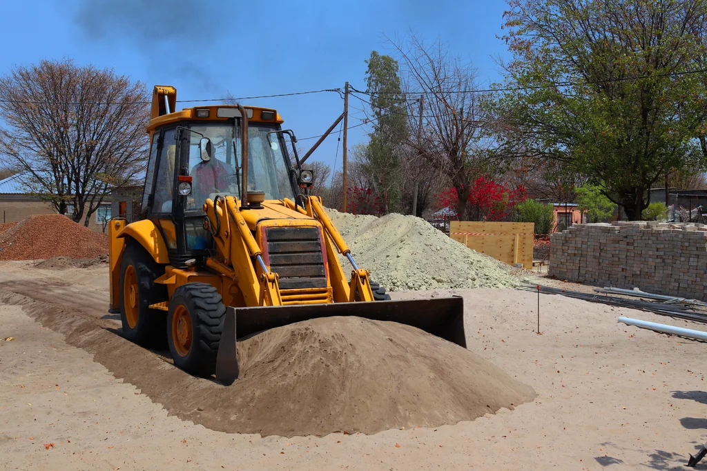{kind=link}
Riktig motortemperatur skal normalt sett være mellom 80 og 92 grader på de fleste biler. Dette er den beste temperaturen for optimal forbrenning av drivstoff. Både for lav og for høy temperatur kan være skadelig for motoren. Riktig motortemperatur skal normalt sett være mellom 80 og 92 grader på de fleste biler. Dette er den beste temperaturen for optimal forbrenning av drivstoff. Både for lav og for høy temperatur kan være skadelig for motoren.
En motortrafikkvei er en vei som er laget for høy fart, men har ikke samme kvalitets- og sikkerhetsnivå som en motorvei. En motortrafikkvei er en vei som er laget for høy fart, men har ikke samme kvalitets- og sikkerhetsnivå som en motorvei.
De samme trafikkreglen gjelder for både motorvei og motortrafikkvei, men det er ikke samme krav til utforming. For eksempel trenger ikke trafikk i motgående retninger være adskilt med fysiske sperrer, og det kan være færre enn to kjørefelt i hver retning. De samme trafikkreglen gjelder for både motorvei og motortrafikkvei, men det er ikke samme krav til utforming. For eksempel trenger ikke trafikk i motgående retninger være adskilt med fysiske sperrer, og det kan være færre enn to kjørefelt i hver retning.
For både motorvei og motortrafikkvei er det krav om at eiendommer langs veien ikke har direkte adkomst ut på veien. For både motorvei og motortrafikkvei er det krav om at eiendommer langs veien ikke har direkte adkomst ut på veien.
Mange biler har en innebygd motorvarmer som går på diesel eller bensin, eller en elektrisk motorvarmer som kobles til strøm. Denne bidrar til at motoren fortere blir varm og får best mulig driftstemperatur tidlig. Mange biler har en innebygd motorvarmer som går på diesel eller bensin, eller en elektrisk motorvarmer som kobles til strøm. Denne bidrar til at motoren fortere blir varm og får best mulig driftstemperatur tidlig.
En motorvei er en vei som er laget for høy fart og stor trafikkavvikling. For å unngå farer og problemer med trafikkavvikling må en motorvei oppfylle en rekke krav. En motorvei er en vei som er laget for høy fart og stor trafikkavvikling. For å unngå farer og problemer med trafikkavvikling må en motorvei oppfylle en rekke krav.
Motorvogn er en samlebetegnelse for alle kjøretøy som blir drevet fram med sin egen motor. Motorvogn er en samlebetegnelse for alle kjøretøy som blir drevet fram med sin egen motor.
Bil, moped, traktor, motorisert gressklipper og ståhjulinger som for eksempel Segway, regnes alle som motorvogner. El-sykkel er ikke definert som motorvogn. Bil, moped, traktor, motorisert gressklipper og ståhjulinger som for eksempel Segway, regnes alle som motorvogner. El-sykkel er ikke definert som motorvogn.
Myke trafikanter er umotoriserte trafikanter som fotgjengere, syklister, sparkbrukere, skigåere, osv. Myk refererer til at myke trafikanter er spesielt utsatt ved trafikkuhell og sammenstøt. Myke trafikanter er umotoriserte trafikanter som fotgjengere, syklister, sparkbrukere, skigåere, osv. Myk refererer til at myke trafikanter er spesielt utsatt ved trafikkuhell og sammenstøt.
Trafikkavviklingen reguleres gjennom trafikkreglene, skilt, oppmerking, lysregulering og manuell trafikkdirigering. Denne rangordningen kalles myndighetspyramiden, og forteller hva/hvem som bestemmer hvis reguleringer mangler eller kommer i konflikt med hverandre. Myndighetspyramiden er slik: Trafikkavviklingen reguleres gjennom trafikkreglene, skilt, oppmerking, lysregulering og manuell trafikkdirigering. Denne rangordningen kalles myndighetspyramiden, og forteller hva/hvem som bestemmer hvis reguleringer mangler eller kommer i konflikt med hverandre. Myndighetspyramiden er slik:
- PolitiPoliti
- LyssignalLyssignal
- Trafikkskilt og veimerkingTrafikkskilt og veimerking
- TrafikkreglerTrafikkregler
Alle vanlige bildekk har mønster. Mønsteret er der for å sikre veigrep: hvis det er vann, snø eller søle på veien, legger dette seg inni mønsteret, istedenfor å legge seg mellom dekket og bakken. Mønsterdybden er dybden på mønsteret. Alle vanlige bildekk har mønster. Mønsteret er der for å sikre veigrep: hvis det er vann, snø eller søle på veien, legger dette seg inni mønsteret, istedenfor å legge seg mellom dekket og bakken. Mønsterdybden er dybden på mønsteret.
Mørkekjøring er en del av trafikalt grunnkurs og foregår i bil i reelle trafikksituasjoner. Det er trafikklæreren som kjører, mens du som elev er passasjer. Mørkekjøring er en del av trafikalt grunnkurs og foregår i bil i reelle trafikksituasjoner. Det er trafikklæreren som kjører, mens du som elev er passasjer.
Mørkekjøring bør gjennomføres så tidlig som mulig i opplæringen. Mørkekjøring bør gjennomføres så tidlig som mulig i opplæringen.
Tar man trafikalt grunnkurs i perioden 16. mars – 31. oktober uten å få gjennomført mørkekjøring, er beviset kun gyldig i tiden 16. mars - 31. oktober. For å kunne øvelseskjøre i perioden 1. november - 15. mars man gjennomføre mørkekjøring først. Tar man trafikalt grunnkurs i perioden 16. mars – 31. oktober uten å få gjennomført mørkekjøring, er beviset kun gyldig i tiden 16. mars - 31. oktober. For å kunne øvelseskjøre i perioden 1. november - 15. mars man gjennomføre mørkekjøring først.
Mørkekjøringen er en del av det trafikale grunnkurset hvor du lærer årsakssammenhenger ved ulykker i mørket, vurdering av risiko og rett lysbruk. Mørkekjøringen er en del av det trafikale grunnkurset hvor du lærer årsakssammenhenger ved ulykker i mørket, vurdering av risiko og rett lysbruk.
Øyets evne til å tilvenne seg omgivelser med lite lys. Menneskets øye fungerer godt i mørket, men bare gjennom gradvis tilvenning. Det tar ca. 30 minutter for øyet å vende seg til mørket etter å ha vært i dagslys. Hvis du i mørket blir utsatt for sterkt lys svekkes nattesynet igjen og du trenger nye 30 minutter for å kunne se like godt. Øyets evne til å tilvenne seg omgivelser med lite lys. Menneskets øye fungerer godt i mørket, men bare gjennom gradvis tilvenning. Det tar ca. 30 minutter for øyet å vende seg til mørket etter å ha vært i dagslys. Hvis du i mørket blir utsatt for sterkt lys svekkes nattesynet igjen og du trenger nye 30 minutter for å kunne se like godt.
På smale veier der det ikke er plass til møtende trafikk kan veien være utvidet enkelte steder med såkalte møteplasser. Slike møteplasser er skiltet spesielt. På smale veier der det ikke er plass til møtende trafikk kan veien være utvidet enkelte steder med såkalte møteplasser. Slike møteplasser er skiltet spesielt.
{kind=link}
Bokstavkode som informerer om hvilket land bilen er registrert i. Bokstavkode som informerer om hvilket land bilen er registrert i.
Nordland, Troms og Finnmark. Nordland, Troms og Finnmark.
Statens vegvesen deler mellom Sør- og Nord-Norge blant annet i regler om vinterdekk. Statens vegvesen deler mellom Sør- og Nord-Norge blant annet i regler om vinterdekk.
For å minimere antall alvorlige ulykker har myndighetene satt et mål for trafikksikkerhetsarbeidet: «Null drepte og null hardt skadde». Denne målsetningen kjenner vi som «Nullvisjonen». For å minimere antall alvorlige ulykker har myndighetene satt et mål for trafikksikkerhetsarbeidet: «Null drepte og null hardt skadde». Denne målsetningen kjenner vi som «Nullvisjonen».
Bilens nærlys skal lyse hvitt eller gult, minst 40 meter forover. Det høyre nærlyset skal lyse litt lengre enn det venstre. Høyden på lysene er også viktig: om lyset er for høyt, blender det møtende trafikanter. Om det er for lavt, treffer det bakken istedenfor å lyse 40 meter, som de skal. Bilens nærlys skal lyse hvitt eller gult, minst 40 meter forover. Det høyre nærlyset skal lyse litt lengre enn det venstre. Høyden på lysene er også viktig: om lyset er for høyt, blender det møtende trafikanter. Om det er for lavt, treffer det bakken istedenfor å lyse 40 meter, som de skal.
En nødbrems er uforberedt, full brems av kjøretøy til kjøretøyet har stanset helt. Dette er selvfølgelig ikke vanlig. Ved vanlig kjøring senker man farten kontrollert, før man bremser ved å trykke lett på bremsepedal eller bremsehendler. En nødbrems er uforberedt, full brems av kjøretøy til kjøretøyet har stanset helt. Dette er selvfølgelig ikke vanlig. Ved vanlig kjøring senker man farten kontrollert, før man bremser ved å trykke lett på bremsepedal eller bremsehendler.
Bilens nødsignallys er når alle fire blinklys blinker samtidig. Nødsignallys skal brukes for å gjøre deg ekstra synlig ved nødstopp, eller for å markere bilen din i situasjoner der du trenger oppmerksomhet – for eksempel hvis du kjører mot plutselig kø, og vil advare bilen bak. Bilens nødsignallys er når alle fire blinklys blinker samtidig. Nødsignallys skal brukes for å gjøre deg ekstra synlig ved nødstopp, eller for å markere bilen din i situasjoner der du trenger oppmerksomhet – for eksempel hvis du kjører mot plutselig kø, og vil advare bilen bak.
Nødstopp er når du må stanse på grunn av tekniske problemer i bilen. Det kan være en feilmelding fra en rød varsellampe som gjør at du bør stanse, eller det kan rett og slett være at bilen ikke vil kjøre lenger. Nødstopp er når du må stanse på grunn av tekniske problemer i bilen. Det kan være en feilmelding fra en rød varsellampe som gjør at du bør stanse, eller det kan rett og slett være at bilen ikke vil kjøre lenger.
En nødtelefon er en telefon montert langs veien, først og fremst på motorvei og i tunneler. Telefonen skal brukes i nødstilfeller eller ved behov for veihjelp, og har direkte forbindelse til et trafikkinformasjonssenter eller nødsentral. En nødtelefon er en telefon montert langs veien, først og fremst på motorvei og i tunneler. Telefonen skal brukes i nødstilfeller eller ved behov for veihjelp, og har direkte forbindelse til et trafikkinformasjonssenter eller nødsentral.
En oljepeiler er en pinne som stikker ned i oljetanken. Man kan dra den opp av tanken, og se hvor høyt oljenivået står. Pinnen er merket med MIN og MAX, og oljenivået skal ligge mellom disse merkene. En oljepeiler er en pinne som stikker ned i oljetanken. Man kan dra den opp av tanken, og se hvor høyt oljenivået står. Pinnen er merket med MIN og MAX, og oljenivået skal ligge mellom disse merkene.

Oljetrykket henger sammen med mengden olje som er i motorens system. For lavt oljetrykk kan føre til at motoren skjærer seg i løpet av kun kort tid. Oljetrykket henger sammen med mengden olje som er i motorens system. For lavt oljetrykk kan føre til at motoren skjærer seg i løpet av kun kort tid.
Å forstå informasjonen du mottar gjennom sansense dine. Å forstå informasjonen du mottar gjennom sansense dine.
Opplysningsskilt angir at særlige regler, herunder forbud og påbud, gjelder eller slutter å gjelde for vedkommende veistrekning eller sted. Opplysningsskilt angir at særlige regler, herunder forbud og påbud, gjelder eller slutter å gjelde for vedkommende veistrekning eller sted.
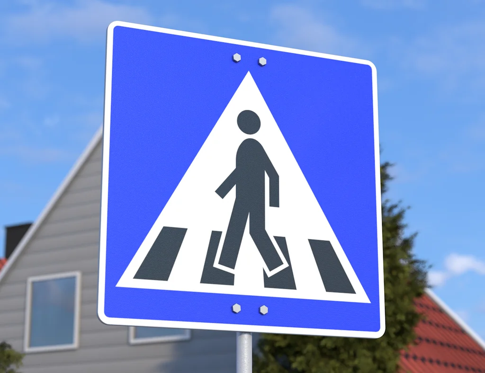{kind=link}
For å få overblikk må du bevege synet, frem og tilbake og ut på sidene, slik at du danner deg et inntrykk av helheten av det du kan se. For å få overblikk må du bevege synet, frem og tilbake og ut på sidene, slik at du danner deg et inntrykk av helheten av det du kan se.
Kjøretøyet svinger krappere enn rattbevegelsen tilsier. Kjøretøyet svinger krappere enn rattbevegelsen tilsier.
Hvis noen har pant i kjøretøyet ditt betyr det at de kan kreve at du selger kjøretøyet for å betale det du skylder. Hvis noen har pant i kjøretøyet ditt betyr det at de kan kreve at du selger kjøretøyet for å betale det du skylder.
I trafikkreglene er parkering definert som enhver hensetting av kjøretøy, selv om føreren ikke forlater det. Unntaket er kortest mulig stans for av- eller påstigning eller av- eller pålessing. I trafikkreglene er parkering definert som enhver hensetting av kjøretøy, selv om føreren ikke forlater det. Unntaket er kortest mulig stans for av- eller påstigning eller av- eller pålessing.
Kameraer i bilen måler om det er mulig å plassere bilen i en luke eller på en parkeringsplass. Deretter gjør bilen selv jobben med rattutslag, gass og brems. På noen biler kan du gå ut av bilen og la bilen gjøre hele jobben selv. Kameraer i bilen måler om det er mulig å plassere bilen i en luke eller på en parkeringsplass. Deretter gjør bilen selv jobben med rattutslag, gass og brems. På noen biler kan du gå ut av bilen og la bilen gjøre hele jobben selv.
Også kalt håndbrekk. Parkeringsbrems er en brems som normalt kun benyttes når kjøretøyet ikke er i bruk. Hensikten er å sikre at et kjøretøy ikke kan flytte på seg når man har parkert det. F.eks. i bratte bakker, o.l. Også kalt håndbrekk. Parkeringsbrems er en brems som normalt kun benyttes når kjøretøyet ikke er i bruk. Hensikten er å sikre at et kjøretøy ikke kan flytte på seg når man har parkert det. F.eks. i bratte bakker, o.l.
Den mest vanlige parkeringsbremsen er et håndbrekk, en håndbrems, som normalt sitter mellom forsetene i en bil. Endel nyere biler har nå en elektronisk parkeringsbrems som aktiviseres med en trykknapp. Den mest vanlige parkeringsbremsen er et håndbrekk, en håndbrems, som normalt sitter mellom forsetene i en bil. Endel nyere biler har nå en elektronisk parkeringsbrems som aktiviseres med en trykknapp.
Parkeringslysene gjør deg synlig når du står parkert i mørket, uten å blende andre trafikanter. Parkeringslysene gjør deg synlig når du står parkert i mørket, uten å blende andre trafikanter.
Bilens parkeringslys skal være hvite. De tennes automatisk når du skrur på bilen, og er alltid tent når nærlys, fjernlys, baklys, skiltlys eller tåkelys er tent. Bilens parkeringslys skal være hvite. De tennes automatisk når du skrur på bilen, og er alltid tent når nærlys, fjernlys, baklys, skiltlys eller tåkelys er tent.
Med passiv sikkerhet mener vi utstyr eller konstruksjoner i bilen som skal beskytte fører, passasjerer og de andre trafikantene ved ulykker. Airbag og sikkerhetsbelter er eksempler på passive sikkerhetsinnretninger. Med passiv sikkerhet mener vi utstyr eller konstruksjoner i bilen som skal beskytte fører, passasjerer og de andre trafikantene ved ulykker. Airbag og sikkerhetsbelter er eksempler på passive sikkerhetsinnretninger.
Piggdekk er dekk til kjøretøy som har pigger av metall i slitebanen. De er beregnet på kjøreforhold med is- og snødekte veier. Piggdekk er dekk til kjøretøy som har pigger av metall i slitebanen. De er beregnet på kjøreforhold med is- og snødekte veier.
Piggdekk gir mye bedre grep på glatt vei. Men siden piggene sliter på veibanen, og lager svevestøv som belaster miljøet, er det bare tillatt i vinterperioden. I noen byer må du betale gebyr for å bruke piggdekk. Piggdekk gir mye bedre grep på glatt vei. Men siden piggene sliter på veibanen, og lager svevestøv som belaster miljøet, er det bare tillatt i vinterperioden. I noen byer må du betale gebyr for å bruke piggdekk.
Signalet gjelder for dem som vil kjøre i den retning pilen viser. Pilsignal kan ha en, to eller tre lysåpninger. Hvis pilsignalet ikke er tent, skal du rette deg etter hovedtrafikklyset. Hvis begge er tent, men du skal den veien pilen viser, skal du rette deg etter pilen. Signalet gjelder for dem som vil kjøre i den retning pilen viser. Pilsignal kan ha en, to eller tre lysåpninger. Hvis pilsignalet ikke er tent, skal du rette deg etter hovedtrafikklyset. Hvis begge er tent, men du skal den veien pilen viser, skal du rette deg etter pilen.
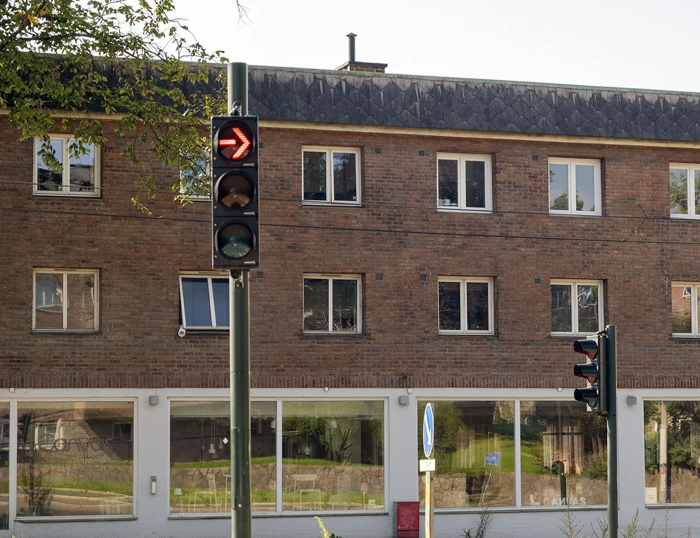{kind=link}
En planovergang er et sted der en vei krysser et tog-, bane- eller trikkespor. En planovergang er et sted der en vei krysser et tog-, bane- eller trikkespor.
Noen yrkesgrupper har strenge regler for alkohol, for eksempel politi, helsepersonell, militær, luftfart og yrkessjåfører. Regelverket kalles for pliktmessig avhold. Yrkessjåfører har pliktmessig avhold ikke bare når de er på jobb, men også 8 timer før de skal på jobb. Noen yrkesgrupper har strenge regler for alkohol, for eksempel politi, helsepersonell, militær, luftfart og yrkessjåfører. Regelverket kalles for pliktmessig avhold. Yrkessjåfører har pliktmessig avhold ikke bare når de er på jobb, men også 8 timer før de skal på jobb.
**Du ser politimannen fra siden** - Hvis politimannen står med siden mot deg, regnes dette som grønt lys og du kan kjøre igjennom krysset. Politimannen bruker gjerne hendene i tillegg for å vinke frem både deg og møtende trafikk gjennom krysset. Trafikk fra siden må vente til politimannen vender siden sin mot dem. Du ser politimannen fra siden - Hvis politimannen står med siden mot deg, regnes dette som grønt lys og du kan kjøre igjennom krysset. Politimannen bruker gjerne hendene i tillegg for å vinke frem både deg og møtende trafikk gjennom krysset. Trafikk fra siden må vente til politimannen vender siden sin mot dem.
**Politimannen løfter en arm i været** - En arm i været betyr det samme som gult lys og gjelder for alle som nærmer seg krysset. Trafikk som allerede er i krysset kan kjøre ut, mens alle andre skal stanse før krysset. Politimannen løfter en arm i været - En arm i været betyr det samme som gult lys og gjelder for alle som nærmer seg krysset. Trafikk som allerede er i krysset kan kjøre ut, mens alle andre skal stanse før krysset.
**Du ser poltimannen forfra/bakfra** - Hvis politmannen står med kroppen vendt mot eller fra deg, regnes dette som rødt lys og du kan ikke kjøre inn i krysset. Du ser poltimannen forfra/bakfra - Hvis politmannen står med kroppen vendt mot eller fra deg, regnes dette som rødt lys og du kan ikke kjøre inn i krysset.
I Norge har vi en prikkbelastningsordning der visse overtredelser medfører en prikkbelastning.I Norge har vi en prikkbelastningsordning der visse overtredelser medfører en prikkbelastning.
- Den som får åtte prikker eller mer i løpet av en tre-års periode mister førerkortet i minst 6 måneder. Den som får åtte prikker eller mer i løpet av en tre-års periode mister førerkortet i minst 6 måneder.
- Fører med prøveperiode for førerrett i klasse B (2 år) skal registreres med dobbelt antall prikker for hver overtredelse begått i prøveperioden. Fører med prøveperiode for førerrett i klasse B (2 år) skal registreres med dobbelt antall prikker for hver overtredelse begått i prøveperioden.
I Norge er promillegrensen på 0,2 og det er ulovlig å føre motorvogn om promillen overstiger dette. I Norge er promillegrensen på 0,2 og det er ulovlig å føre motorvogn om promillen overstiger dette.
Når du får førerkort, starter du med to års prøvetid. Når du er under prøvetid har du ikke helt de samme rettighetene som de som har hatt lappen i mange år, og som ikke er i prøvetid. Lovbrudd og forseelser får større konsekvenser: Når du får førerkort, starter du med to års prøvetid. Når du er under prøvetid har du ikke helt de samme rettighetene som de som har hatt lappen i mange år, og som ikke er i prøvetid. Lovbrudd og forseelser får større konsekvenser:
- Får du inndratt førerkortet ditt under prøvetiden, må du ta både teoriprøve og oppkjøring på nytt for å få tilbake førerkortet. Da går du inn i ny prøvetid på 2 år. Får du inndratt førerkortet ditt under prøvetiden, må du ta både teoriprøve og oppkjøring på nytt for å få tilbake førerkortet. Da går du inn i ny prøvetid på 2 år.
- Når du er i prøvetid får du dobbelt så mange prikker for overtredelser i trafikken. Når du er i prøvetid får du dobbelt så mange prikker for overtredelser i trafikken.
Påbudsskiltene gjelder et påbud på en veistrekning eller et sted. Påbudet gjelder som regel hvilket kjørefelt som skal benyttes eller hvilken retning du kan kjøre i et kryss. Påbudsskiltene gjelder et påbud på en veistrekning eller et sted. Påbudet gjelder som regel hvilket kjørefelt som skal benyttes eller hvilken retning du kan kjøre i et kryss.
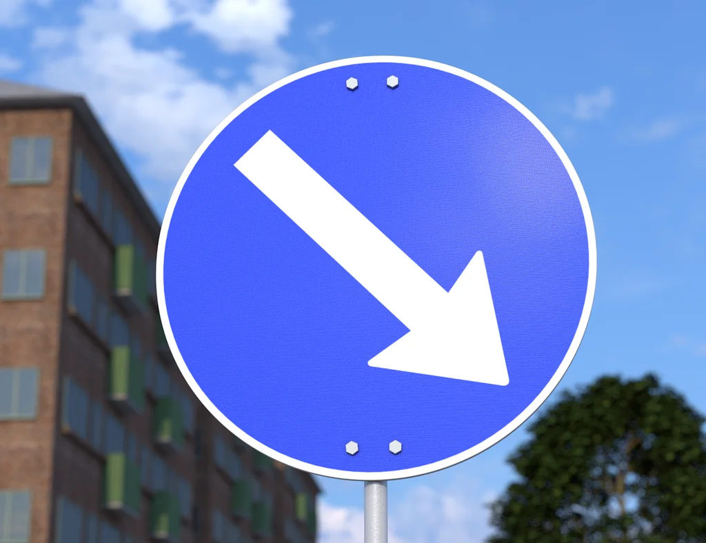{kind=link}
Et rattutslag er en gitt dreining av rattet. Et rattutslag er en gitt dreining av rattet.
Fullt rattutslag betyr at rattet er dreiet så langt det går. Et lite rattutslag er å dreie på rattet littegrann. Fullt rattutslag betyr at rattet er dreiet så langt det går. Et lite rattutslag er å dreie på rattet littegrann.
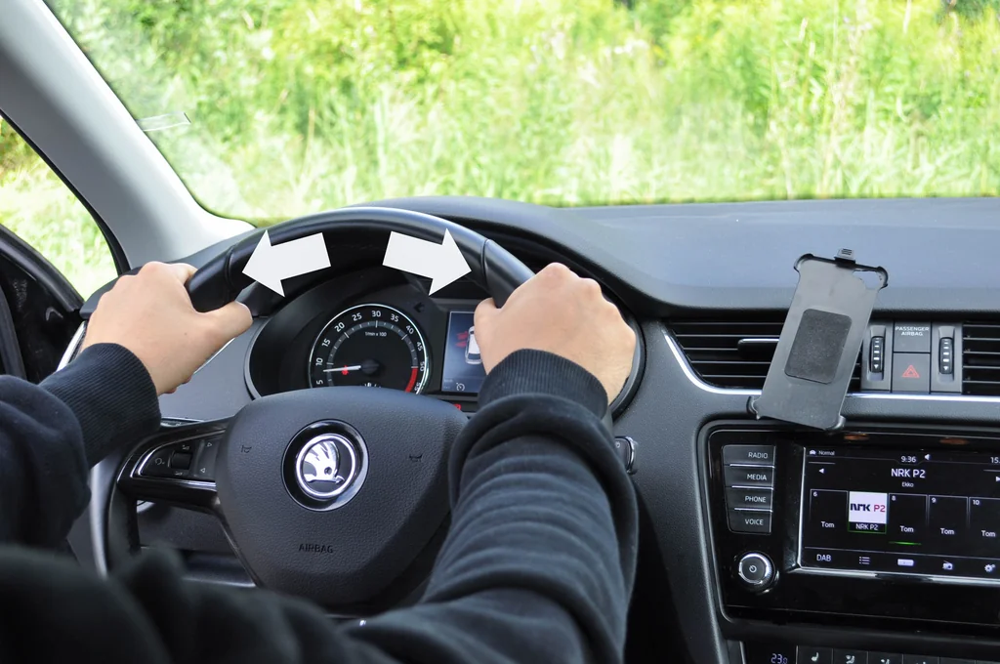{kind=link}
Reaksjonslengden er den strekningen du tilbakelegger fra du oppdager en trafikksituasjon til du starter en reaksjon/handling. Reaksjonslengden er den strekningen du tilbakelegger fra du oppdager en trafikksituasjon til du starter en reaksjon/handling.
Reaksjonstiden er tiden som går fra du sanser en fare til du har oppfattet den og bestemt deg for hvordan du skal handle. Reaksjonstiden består altså av de tre første av de fire stegene i kjøreprosessen – sanse, oppfatte og beslutte. Reaksjonstiden er tiden som går fra du sanser en fare til du har oppfattet den og bestemt deg for hvordan du skal handle. Reaksjonstiden består altså av de tre første av de fire stegene i kjøreprosessen – sanse, oppfatte og beslutte.
Det er påbudt å ha med minst én refleksvest. Den skal være lett tilgjengelig fra førersetet og kan for eksempel ligge under setet, i hanskerommet eller i sidedøra. Det er påbudt å ha med minst én refleksvest. Den skal være lett tilgjengelig fra førersetet og kan for eksempel ligge under setet, i hanskerommet eller i sidedøra.
Hvis forsikringsselskapet må gjøre en forsikringsutbetaling på grunn av skader som du er skyld i, kan de kreve penger tilbake av deg. Dette kalles regress. Hvis forsikringsselskapet må gjøre en forsikringsutbetaling på grunn av skader som du er skyld i, kan de kreve penger tilbake av deg. Dette kalles regress.
At noe er regulert betyr at det er beskrevet i lov. Altså, at det er underlagt et regelverk som må følges. At noe er regulert betyr at det er beskrevet i lov. Altså, at det er underlagt et regelverk som må følges.
For eksempel er mopedkjøring regulert fordi det finnes lover og regler som du må forholde deg til om du kjører eller vil kjøre moped. Reglene bestemmer hvem som kan kjøre moped, hva som er lov når du kjører moped og så videre. For eksempel er mopedkjøring regulert fordi det finnes lover og regler som du må forholde deg til om du kjører eller vil kjøre moped. Reglene bestemmer hvem som kan kjøre moped, hva som er lov når du kjører moped og så videre.
Det er mye som regulerer mopedkjøring: førerkortforskriften, forskrift for bruk av kjøretøy og trafikkreglene – blant annet. Det er mye som regulerer mopedkjøring: førerkortforskriften, forskrift for bruk av kjøretøy og trafikkreglene – blant annet.
Regulering av trafikk dekker alt innenfor trafikksystemet - Altså alt av skilt, trafikkoppmerking, lover og regler for trafikken. Regulering av trafikk dekker alt innenfor trafikksystemet - Altså alt av skilt, trafikkoppmerking, lover og regler for trafikken.
Hastigheten du holder sammenlignet med f.eks en annen bil. Hastigheten du holder sammenlignet med f.eks en annen bil.
Retningslys kalles ofte blinklys. Bilen skal ha et oransje retningslys på hvert hjørne. Retningslys kalles ofte blinklys. Bilen skal ha et oransje retningslys på hvert hjørne.
Retningsstabilitet er kjøretøyets evne til å holde rett kurs, og ikke dra til en av sidene. Retningsstabilitet er kjøretøyets evne til å holde rett kurs, og ikke dra til en av sidene.
En form for kryss der kjøreretningen går mot klokka i en sirkel. De som skal inn i rundkjøringen har vikeplikt for kjørende som allerede er i rundkjøringen. En form for kryss der kjøreretningen går mot klokka i en sirkel. De som skal inn i rundkjøringen har vikeplikt for kjørende som allerede er i rundkjøringen.
Når du rygger eller vender har du vikeplikt for alle andre trafikanter. Husk også at det er ditt ansvar at du har full kontroll på det som måtte befinne seg i blindsonene dine når du rygger. Når du rygger eller vender har du vikeplikt for alle andre trafikanter. Husk også at det er ditt ansvar at du har full kontroll på det som måtte befinne seg i blindsonene dine når du rygger.
Ryggelys er hvite eller gule lys bak på bilen, som skal gjøre det lettere å se når du rygger. Nye biler har ryggelys, men det er ikke påbudt. Ryggelys er hvite eller gule lys bak på bilen, som skal gjøre det lettere å se når du rygger. Nye biler har ryggelys, men det er ikke påbudt.
Du må alltid levere salgsmelding når du skal selge et kjøretøy. Salgsmeldingen skal leveres til Statens vegvesen og det gjøres enklest digitalt. Du må alltid levere salgsmelding når du skal selge et kjøretøy. Salgsmeldingen skal leveres til Statens vegvesen og det gjøres enklest digitalt.
Et sambruksfelt er et eget felt der følgende kjøretøy kan kjøre lovlig: Et sambruksfelt er et eget felt der følgende kjøretøy kan kjøre lovlig:
- Buss Buss
- Drosje Drosje
- Motorvogn som transporterer minst det antall personer som er angitt ved tall på skilt Motorvogn som transporterer minst det antall personer som er angitt ved tall på skilt
- Elektrisk eller hydrogendrevet motorvogn Elektrisk eller hydrogendrevet motorvogn
- Tohjuls motorsykkel uten sidevogn Tohjuls motorsykkel uten sidevogn
- Tohjuls moped Tohjuls moped
- Sykkel Sykkel
- Uniformert utrykningskjøretøy. Uniformert utrykningskjøretøy.
{kind=link}
Samhandling er kommunikasjon og samspillet mellom de ulike trafikantene. Samhandling er kommunikasjon og samspillet mellom de ulike trafikantene.
Når loven blir brutt vil myndighetene reagere med *sanksjoner.* Når loven blir brutt vil myndighetene reagere med sanksjoner.
Gebyr, forenklet forelegg, bot, fengsel, sperrefrist og inndragning av førerkort er alle sanksjoner fra myndighetene. Gebyr, forenklet forelegg, bot, fengsel, sperrefrist og inndragning av førerkort er alle sanksjoner fra myndighetene.
Å se og bli sett er avgjørende i trafikken. Se-reglene omhandler dette og består av fem punkter: Å se og bli sett er avgjørende i trafikken. Se-reglene omhandler dette og består av fem punkter:
- Se langt frem Se langt frem
- Beveg blikket Beveg blikket
- Ta overblikk Ta overblikk
- Se alltid etter en utvei Se alltid etter en utvei
- Bli sett og forstått Bli sett og forstått
Selvopprettende betyr at bilen retter seg opp om du slipper rattet når du kjører i sving. Selvopprettende betyr at bilen retter seg opp om du slipper rattet når du kjører i sving.
Serviceskilt gir opplysninger om nødhjelp, veiservice, severdigheter med mer. To eller flere symboler kan kombineres på samme skilt Serviceskilt gir opplysninger om nødhjelp, veiservice, severdigheter med mer. To eller flere symboler kan kombineres på samme skilt
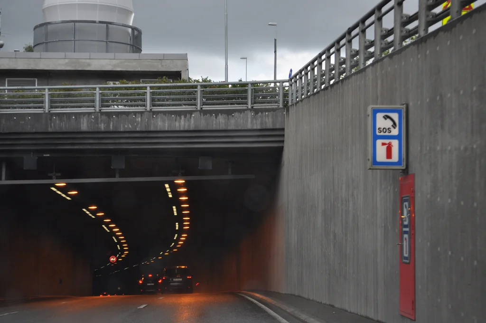{kind=link}
Styresystem med en mekanisme som gjør det lettere å dreie rattet, og svinge på hjulene. Mekanismen gjør kjøringen jevnere og mindre anstrengende. Den bidrar også i å hindre rattutslag som skyldes ujevn vei. Styresystem med en mekanisme som gjør det lettere å dreie rattet, og svinge på hjulene. Mekanismen gjør kjøringen jevnere og mindre anstrengende. Den bidrar også i å hindre rattutslag som skyldes ujevn vei.
En sideveis forflytning vil si enhver endring i kjøretøyets plass på veien i sideretning, for eksempel når du skifter felt, kjører ut fra veikanten, kjører utenom en hindring i veien eller liknende. En sideveis forflytning vil si enhver endring i kjøretøyets plass på veien i sideretning, for eksempel når du skifter felt, kjører ut fra veikanten, kjører utenom en hindring i veien eller liknende.
Ved sideveis forflytning får du vikeplikt for trafikanter som allerede befinner seg i feltet du ønsker å kjøre inn i. Ved sideveis forflytning får du vikeplikt for trafikanter som allerede befinner seg i feltet du ønsker å kjøre inn i.
Siktforhold handler om sikten i trafikken. Altså hvorvidt det regner, snør, er tåke eller solskinn. Men også om det er fysiske sikthindringer som høye hekker, bygninger, trær, osv. Siktforhold handler om sikten i trafikken. Altså hvorvidt det regner, snør, er tåke eller solskinn. Men også om det er fysiske sikthindringer som høye hekker, bygninger, trær, osv.
Er det samme som sjokk. En tilstand der blodsirkulasjonen er utilstrekkelig til å møte kroppens behov. Den nedsatte blodsirkulasjonen fører til kald og klam hud og sløret bevissthet. Er det samme som sjokk. En tilstand der blodsirkulasjonen er utilstrekkelig til å møte kroppens behov. Den nedsatte blodsirkulasjonen fører til kald og klam hud og sløret bevissthet.
Evnen noe har til å skade ved ulykke. En stor og tung bil har stort skadepotensial, fordi den fort kan gjøre veldig stor skade ved ulykke. Evnen noe har til å skade ved ulykke. En stor og tung bil har stort skadepotensial, fordi den fort kan gjøre veldig stor skade ved ulykke.
Å være skikket vil si at du er våken, frisk og opplagt, og ikke er påvirket av alkohol, andre rusmidler eller trafikkfarlige legemidler. Å være skikket vil si at du er våken, frisk og opplagt, og ikke er påvirket av alkohol, andre rusmidler eller trafikkfarlige legemidler.
Vegtrafikkloven sier at du ikke må føre eller forsøke å føre kjøretøy når du er i en slik tilstand at du ikke anses *skikket* til å kjøre på trygg måte. Vegtrafikkloven sier at du ikke må føre eller forsøke å føre kjøretøy når du er i en slik tilstand at du ikke anses skikket til å kjøre på trygg måte.
Bilens skiltlys skal være hvitt og skal automatisk lyse opp bilens skilter når motoren er i gang. I kjøretøyforskriften kalles registreringsskiltet for kjennemerke og skiltlyset kalles lys for kjennemerke. Bilens skiltlys skal være hvitt og skal automatisk lyse opp bilens skilter når motoren er i gang. I kjøretøyforskriften kalles registreringsskiltet for kjennemerke og skiltlyset kalles lys for kjennemerke.
Skjevtrekk er når bilen trekker til en av sidene når du bremser. Skjevtrekk skyldes som regel at bremsene ikke slites jevnt på begge sider. Problemet kan ordnes på et verksted. Skjevtrekk er når bilen trekker til en av sidene når du bremser. Skjevtrekk skyldes som regel at bremsene ikke slites jevnt på begge sider. Problemet kan ordnes på et verksted.
Mønsteret på dekkslitasje kan si noe om årsaken til slitasjen. For høyt lufttrykk vil f.eks føre til at dekket slites i midten av slitebanen, men for lavt lufttrykk fører til at dekkene slites på siden. Mønsteret på dekkslitasje kan si noe om årsaken til slitasjen. For høyt lufttrykk vil f.eks føre til at dekket slites i midten av slitebanen, men for lavt lufttrykk fører til at dekkene slites på siden.
Dekkets slitebane er den delen av dekket som er i kontakt med underlaget. Dekkets slitebane er den delen av dekket som er i kontakt med underlaget.
Sommerdekk skal ha en mønsterdybde på minimum 1,6 mm. Sommerdekk kan brukes i vinterperioden, så lenge føret tillater det og dekkene da har minium 3 mm mønsterdybde. Sommerdekk skal ha en mønsterdybde på minimum 1,6 mm. Sommerdekk kan brukes i vinterperioden, så lenge føret tillater det og dekkene da har minium 3 mm mønsterdybde.
I sommerperioden er det krav om minst 1,6 mm mønsterdybde. Det er ikke tillatt med piggdekk, med mindre føret krever det. I sommerperioden er det krav om minst 1,6 mm mønsterdybde. Det er ikke tillatt med piggdekk, med mindre føret krever det.
Sommerperioden er: Sommerperioden er:
- Nord-Norge: 1. mai – 14. okt. Nord-Norge: 1. mai – 14. okt.
- Resten av Norge: mandagen etter 2. påskedag – 31. okt. Resten av Norge: mandagen etter 2. påskedag – 31. okt.
I boligområder benyttes ofte soneskilt for å angi fartsgrense, parkeringsbestemmelser eller lignende for alle gater innenfor en naturlig avgrenset område. I boligområder benyttes ofte soneskilt for å angi fartsgrense, parkeringsbestemmelser eller lignende for alle gater innenfor en naturlig avgrenset område.
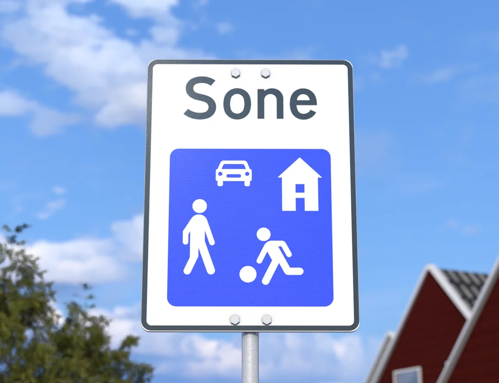{kind=link}
Speilene hjelper deg å få oversikt på det som skjer bak deg. Bruk de flittig, men ikke glem at du allikevel har ganske store blindsoner bakover som speilene ikke dekker. Speilene hjelper deg å få oversikt på det som skjer bak deg. Bruk de flittig, men ikke glem at du allikevel har ganske store blindsoner bakover som speilene ikke dekker.
Hvis du har fått sperrefrist av politiet kan du ikke kjøre opp. En sperrefrist er en utsettelse av tidspunktet for når du får lov til å ta førerkort. Hvis du har fått sperrefrist av politiet kan du ikke kjøre opp. En sperrefrist er en utsettelse av tidspunktet for når du får lov til å ta førerkort.
- Sperrefristen varer fra du har fylt 18 år. Så hvis du får 6 måneder sperrefrist før du har fylt 18 år, varer den til du er 18 år og 6 måneder. Sperrefristen varer fra du har fylt 18 år. Så hvis du får 6 måneder sperrefrist før du har fylt 18 år, varer den til du er 18 år og 6 måneder.
- Du har ikke lov til å øvelseskjøre hvis du har fått sperrefrist, med mindre du får spesiell tillatelse av politiet. Du har ikke lov til å øvelseskjøre hvis du har fått sperrefrist, med mindre du får spesiell tillatelse av politiet.

En sperrelinje består av en uavbrutt linje som varsler om at en forbikjøring ikke er mulig. Krysser du sperrelinjen risikerer du å få førerkortet inndratt. Sperrelinjer kan ofte være doble, som på bildet. En sperrelinje består av en uavbrutt linje som varsler om at en forbikjøring ikke er mulig. Krysser du sperrelinjen risikerer du å få førerkortet inndratt. Sperrelinjer kan ofte være doble, som på bildet.
Et sperreområde er et skravert område som ikke må krysses. Slike sperreområder benyttes ofte i kryss eller for å skille mellom trafikken på motortrafikkvei. Et sperreområde er et skravert område som ikke må krysses. Slike sperreområder benyttes ofte i kryss eller for å skille mellom trafikken på motortrafikkvei.
Når du stopper bilen regnes det som en stans. Hvis du stoppet fordi en trafikksituasjon, skilting, trafikklys eller trafikkregler gjorde at du måtte stanse, kaller vi det for en trafikal stans. Når du stopper bilen regnes det som en stans. Hvis du stoppet fordi en trafikksituasjon, skilting, trafikklys eller trafikkregler gjorde at du måtte stanse, kaller vi det for en trafikal stans.
Av og til går man tom for strøm, og trenger starthjelp av en nabo eller forbipasserende som har startkabler liggende i bilen. Men det er viktig å gjøre ting i riktig rekkefølge. Her er viktige tips om du trenger starthjelp: Av og til går man tom for strøm, og trenger starthjelp av en nabo eller forbipasserende som har startkabler liggende i bilen. Men det er viktig å gjøre ting i riktig rekkefølge. Her er viktige tips om du trenger starthjelp:
1 - Skru av tenningen på begge bilene 1 - Skru av tenningen på begge bilene
2 - Koble den røde kabelen først til giverbatteriets plusspol - og deretter til bilens plusspol. 2 - Koble den røde kabelen først til giverbatteriets plusspol - og deretter til bilens plusspol.
3 - Koble den sorte kabelen til giverbatteriets minuspol - og deretter til bilens motorblokk - så langt unna batteriet som mulig. 3 - Koble den sorte kabelen til giverbatteriets minuspol - og deretter til bilens motorblokk - så langt unna batteriet som mulig.
4 - Start bilen med det friske batteriet. 4 - Start bilen med det friske batteriet.
5 - Start bilen med det flate batteriet. 5 - Start bilen med det flate batteriet.
6 - Avslutte ved å løsne klemmen som sitter på motorblokken, og deretter resten i omvendt rekkefølge: 6 - Avslutte ved å løsne klemmen som sitter på motorblokken, og deretter resten i omvendt rekkefølge:
Bruk aldri minuspolen på mottagende kjøretøy som kontaktpunkt. Dette er veldig viktig for det tomme batteriet kan utvikle knallgass og gnister kan forekomme når kretsen sluttes. Disse gnistene kan antenne knallgassen og føre til alvorlige skader. Bruk aldri minuspolen på mottagende kjøretøy som kontaktpunkt. Dette er veldig viktig for det tomme batteriet kan utvikle knallgass og gnister kan forekomme når kretsen sluttes. Disse gnistene kan antenne knallgassen og føre til alvorlige skader.
Stopplengden er strekningen du tilbakelegger fra du oppdager en trafikksituasjon til kjøretøyet ditt har stanset helt. Stopplengden er strekningen du tilbakelegger fra du oppdager en trafikksituasjon til kjøretøyet ditt har stanset helt.
En stopplinje er en tverrgående linje som angir hvor kjøretøy skal stanses når offentlig trafikkskilt eller trafikklyssignal påbyr stans. Linjen er heltrukken. En stopplinje er en tverrgående linje som angir hvor kjøretøy skal stanses når offentlig trafikkskilt eller trafikklyssignal påbyr stans. Linjen er heltrukken.

Styreenheten leser av parametere fra givere i motoren og styrer innsprøytning, tenning og lignende. Jo nyere bilen er, jo større ansvar har gjerne styreenhetene, og flere styreenheter til ulike komponenter som ABS, ESP og lignende blir mer og mer vanlig. Styreenheten leser av parametere fra givere i motoren og styrer innsprøytning, tenning og lignende. Jo nyere bilen er, jo større ansvar har gjerne styreenhetene, og flere styreenheter til ulike komponenter som ABS, ESP og lignende blir mer og mer vanlig.
Hvor krapt man kan svinge. Store biler har gjerne stor svingradius – de trenger altså stor plass til å svinge. Hvor krapt man kan svinge. Store biler har gjerne stor svingradius – de trenger altså stor plass til å svinge.
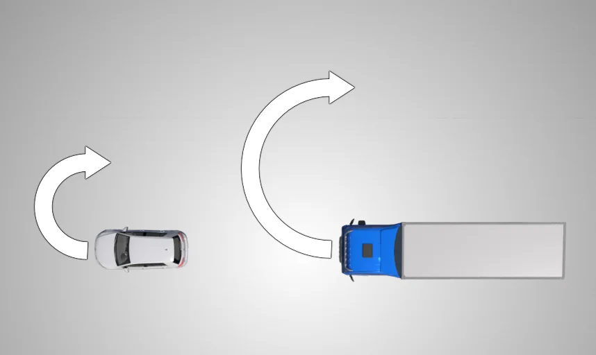{kind=link}
Kjørefelt som ved offentlig trafikkskilt og oppmerking er bestemt for syklende. Kjørefelt som ved offentlig trafikkskilt og oppmerking er bestemt for syklende.
Sykkelkryssing er et oppmerket område på tvers av kjørebanen som angir kryssingssted for syklende. Sykkelkryssing er et oppmerket område på tvers av kjørebanen som angir kryssingssted for syklende.

Synsfeltet vårt kan deles inn i to deler – sentralsynet og sidesynet. *Sentralsynet,* eller *skarpsynet,* har en synsvinkel på ca. 3-5 grader, og oppdager detaljene i omgivelsene. *Sidesynet* har en synsvinkel på nesten 180 grader, og oppfatter bevegelser og lysendringer utenfor skarpsynet. Synsfeltet vårt kan deles inn i to deler – sentralsynet og sidesynet. Sentralsynet, eller skarpsynet, har en synsvinkel på ca. 3-5 grader, og oppdager detaljene i omgivelsene. Sidesynet har en synsvinkel på nesten 180 grader, og oppfatter bevegelser og lysendringer utenfor skarpsynet.
Sidesynet varsler om hendelser som bør kontrolleres nærmere med skarpsynet. Dette kalles øyets *varslingsrefleks.* Sidesynet varsler om hendelser som bør kontrolleres nærmere med skarpsynet. Dette kalles øyets varslingsrefleks.
Trøndelag og sørover. Altså alle fylker utenom Nordland, Troms og Finnmark. Trøndelag og sørover. Altså alle fylker utenom Nordland, Troms og Finnmark.
Statens vegvesen deler Norge i sør og nord blant annet i regelverket for vinterdekk. Statens vegvesen deler Norge i sør og nord blant annet i regelverket for vinterdekk.
Viktig å tenke på når du skal taue en bil. Viktig å tenke på når du skal taue en bil.
Kun en motorvogn kan taues om gangen. Bilen som taues må kunne bremse forsvarlig. Slepetau, stag eller annen innretning må merkes forsvarlig og tydelig. Kun en motorvogn kan taues om gangen. Bilen som taues må kunne bremse forsvarlig. Slepetau, stag eller annen innretning må merkes forsvarlig og tydelig.
Tegn og signal brukes for å gi informasjon til andre trafikanter. Tegn og signal brukes for å gi informasjon til andre trafikanter.
- Tegn er blinklys og bremselys. Du gir tegn for å informere andre trafikanter om hva du gjør. Tegn er blinklys og bremselys. Du gir tegn for å informere andre trafikanter om hva du gjør.
- Signal vil si å bruke bilens lydhorn eller lyshorn (blinke med fjernlysene/sette på nødsignallys). Signal brukes kun for å varsle eller avverge fare. Signal vil si å bruke bilens lydhorn eller lyshorn (blinke med fjernlysene/sette på nødsignallys). Signal brukes kun for å varsle eller avverge fare.
Et tettbygd strøk er et bebodd område hvor det ikke er store avstander mellom husene. Det er skiltmyndigheten for fartsgrenser som i utgangspunktet avgjør hva som skal regnes som tettbygd strøk i vegtrafikklovens forstand. Et tettbygd strøk er et bebodd område hvor det ikke er store avstander mellom husene. Det er skiltmyndigheten for fartsgrenser som i utgangspunktet avgjør hva som skal regnes som tettbygd strøk i vegtrafikklovens forstand.
Sporadisk transport som ikke skjer så veldig ofte, og som ikke er del av en regelmessig, planlagt transportvirksomhet. Sporadisk transport som ikke skjer så veldig ofte, og som ikke er del av en regelmessig, planlagt transportvirksomhet.
For eksempel transport av en planke du har kjøpt på trevarehandelen. For eksempel transport av en planke du har kjøpt på trevarehandelen.
En tilhenger er en vogn som hektes på et kjøretøy. Tilhengeren er beregnet for å gi kjøretøyet utvidet lastekapasitet. En tilhenger er en vogn som hektes på et kjøretøy. Tilhengeren er beregnet for å gi kjøretøyet utvidet lastekapasitet.
Tillatt koblingslast angir hvor mye vekt selve tilhengerfestet tåler. Plasser lasten korrekt på hengeren for ikke å få for høyt eller lavt trykk på koblingen, da dette vil gjøre bilen ustabil. Tillatt koblingslast angir hvor mye vekt selve tilhengerfestet tåler. Plasser lasten korrekt på hengeren for ikke å få for høyt eller lavt trykk på koblingen, da dette vil gjøre bilen ustabil.
Tillatt koblingslast står oppgitt både i vognkort til bil og tilhenger – der de er forskjellige, vil den laveste vekten gjelde. Tillatt koblingslast står oppgitt både i vognkort til bil og tilhenger – der de er forskjellige, vil den laveste vekten gjelde.
Tillatt nyttelast er lik differansen mellom tillatt totalvekt og kjøretøyets egenvekt (inkludert fører - 75 kg). Tillatt nyttelast er lik differansen mellom tillatt totalvekt og kjøretøyets egenvekt (inkludert fører - 75 kg).
Nyttelast forteller derfor hvor tung last du kan laste ditt kjøretøy med. Nyttelast forteller derfor hvor tung last du kan laste ditt kjøretøy med.
Tillatt nyttelast (inkl. passasjerer) er oppgitt i vognkortet. Tillatt nyttelast (inkl. passasjerer) er oppgitt i vognkortet.
Tillatt totalvekt er den høyeste tillatte vekten kjøretøyet ditt kan ha. Det står oppgitt i vognkortet. Tillatt totalvekt er den høyeste tillatte vekten kjøretøyet ditt kan ha. Det står oppgitt i vognkortet.
Tillatt vogntogvekt er hvor mye kjøretøy og henger kan veie til sammen. Tillatt vogntogvekt er hvor mye kjøretøy og henger kan veie til sammen.
I vognkortets punkt 8 står opplysninger om tillatte vekter. I vognkortets punkt 8 står opplysninger om tillatte vekter.
Tilstrekkelig utsyn betyr at du har god nok sikt ut av bilen. Rutene skal være is- og duggfrie, og eventuell last skal ikke blokkere sikten. Tilstrekkelig utsyn betyr at du har god nok sikt ut av bilen. Rutene skal være is- og duggfrie, og eventuell last skal ikke blokkere sikten.
Med tohjulinger mener vi her motorsykler, mopeder og sykler. Med tohjulinger mener vi her motorsykler, mopeder og sykler.
En trafikal stans er en naturlig stans som følge av trafikksituasjonen, som for eksempel stans ved vikeplikt, rødt lys, kø, etc. En trafikal stans er en naturlig stans som følge av trafikksituasjonen, som for eksempel stans ved vikeplikt, rødt lys, kø, etc.
Trafikalt grunnkurs består av 17 timer obligatorisk opplæring som skal gi deg en innføring i de viktigste aspektene ved det å være sjåfør. Trafikalt grunnkurs består av 17 timer obligatorisk opplæring som skal gi deg en innføring i de viktigste aspektene ved det å være sjåfør.
Trafikk-kjegler ser du overalt – det er de små hattene som man setter på bakken, for eksempel for å markere veiarbeid. Trafikk-kjegler regnes som markeringsskilt. Trafikk-kjegler ser du overalt – det er de små hattene som man setter på bakken, for eksempel for å markere veiarbeid. Trafikk-kjegler regnes som markeringsskilt.

Når det er mye trafikk vil det ofte oppstå mye kø og vi får dårlig trafikkflyt. I rushtiden er trafikkflyten gjerne på sitt dårligste. Når det er mye trafikk vil det ofte oppstå mye kø og vi får dårlig trafikkflyt. I rushtiden er trafikkflyten gjerne på sitt dårligste.
Også kalt *ansvarsforsikring.* Også kalt ansvarsforsikring.
Trafikkforsikring er en pålagt forsikring du må ha på nesten alle kjøretøy. Om du blir skyld i et trafikkuhell, dekker trafikkforsikringen skade på annen person og andres eiendeler. Den dekker også skade på deg selv. Trafikkforsikring er en pålagt forsikring du må ha på nesten alle kjøretøy. Om du blir skyld i et trafikkuhell, dekker trafikkforsikringen skade på annen person og andres eiendeler. Den dekker også skade på deg selv.
Forsikringen dekker ikke skade på egne eiendeler. Til det må du ha kasko. Forsikringen dekker ikke skade på egne eiendeler. Til det må du ha kasko.
**Grønt lys** – betyr at du kan passere signal eller stopplinje dersom veien er fri. Grønt lys – betyr at du kan passere signal eller stopplinje dersom veien er fri.
**Gult lys** – varsler at det straks blir rødt lys og at du må stanse. Hvis du ikke rekker å stanse fordi du har god fart og er nærme krysset, så er det som oftest bedre å kjøre igjennom krysset enn å bråbremse rett før. Gult lys – varsler at det straks blir rødt lys og at du må stanse. Hvis du ikke rekker å stanse fordi du har god fart og er nærme krysset, så er det som oftest bedre å kjøre igjennom krysset enn å bråbremse rett før.
**Rødt lys** – betyr at du ikke må passere signal eller stopplinje Rødt lys – betyr at du ikke må passere signal eller stopplinje
**Rødt lys sammen med gult lys** – varsler om at det snart blir grønt. Rødt lys sammen med gult lys – varsler om at det snart blir grønt.
**Blinkende gult lys eller ingen lys** – betyr at trafikklyset er satt ut av funksjon og da er det skilting eller de generelle vikepliktsreglene som gjelder. Blinkende gult lys eller ingen lys – betyr at trafikklyset er satt ut av funksjon og da er det skilting eller de generelle vikepliktsreglene som gjelder.
Egentlig «Forskrift om kjørende og gående trafikk.» I trafikkreglene finnes blant annet reglene om plassering, vikeplikt, spesielle fartsbestemmelser, forbikjøring, stans og parkering. Egentlig «Forskrift om kjørende og gående trafikk.» I trafikkreglene finnes blant annet reglene om plassering, vikeplikt, spesielle fartsbestemmelser, forbikjøring, stans og parkering.
En trafikksituasjon består av deg og kjøretøyet ditt, andre trafikanter, veien, veisystemet og skilting, sikt- og føreforhold og samspillet mellom disse faktorene. En trafikksituasjon består av deg og kjøretøyet ditt, andre trafikanter, veien, veisystemet og skilting, sikt- og føreforhold og samspillet mellom disse faktorene.
Trafikksituasjoner varierer fra de helt enkle og oversiktlige til de kompliserte og uoversiktlige. I en komplisert trafikksituasjon er det mye som skjer som du må forholde deg til og store mengder med informasjon som hjernen din må bearbeide gjennom prosesser. Trafikksituasjoner varierer fra de helt enkle og oversiktlige til de kompliserte og uoversiktlige. I en komplisert trafikksituasjon er det mye som skjer som du må forholde deg til og store mengder med informasjon som hjernen din må bearbeide gjennom prosesser.
Trafikkreglene og vegtrafikkloven gir oss retningslinjer for hvordan vi skal kjøre og oppføre oss i trafikken. Vi kan si at de er en del av trafikkstyringen. Trafikkreglene og vegtrafikkloven gir oss retningslinjer for hvordan vi skal kjøre og oppføre oss i trafikken. Vi kan si at de er en del av trafikkstyringen.
Trafikksystemet består av fire deler: trafikkstyringen, veien, kjøretøyene og trafikantene. Trafikksystemet består av fire deler: trafikkstyringen, veien, kjøretøyene og trafikantene.
En trafikkulykke er en ulykke som skjer på en vei og hvor ett eller flere kjøretøy i bevegelse er innblandet. En trafikkulykke er en ulykke som skjer på en vei og hvor ett eller flere kjøretøy i bevegelse er innblandet.
Physical obstacle between two traffic lanes. Physical obstacle between two traffic lanes.
Når en bil svinger brått, fyker løse gjenstander inni bilen rett frem. De følger ikke svingen til bilen. Det er på grunn av gjenstandenes treghetskrefter. De er trege – det tar tid før de blir med bilen på svingen. Når en bil svinger brått, fyker løse gjenstander inni bilen rett frem. De følger ikke svingen til bilen. Det er på grunn av gjenstandenes treghetskrefter. De er trege – det tar tid før de blir med bilen på svingen.
Når du slipper opp gassen tar det tid før bilen går ned i fart – det er også på grunn av treghetskreftene. Når du slipper opp gassen tar det tid før bilen går ned i fart – det er også på grunn av treghetskreftene.
Før du kjører inn i en tunnel er det en del potensielle farer du bør være klar over, slik at du kan kjøre med lavest mulig risiko. Les mer om tunnel i kurset. Før du kjører inn i en tunnel er det en del potensielle farer du bør være klar over, slik at du kan kjøre med lavest mulig risiko. Les mer om tunnel i kurset.
Synfeltet ditt innsnevres mer, dess fortere du kjører. Synfeltet ditt innsnevres mer, dess fortere du kjører.
Turtall sier hvor mange omdreininger motoren gjør i løpet av et minutt. Turtall sier hvor mange omdreininger motoren gjør i løpet av et minutt.
Ulovlig øvelseskjøring, som kan føre til sperrefrist, er: Ulovlig øvelseskjøring, som kan føre til sperrefrist, er:
- øvelseskjøring med ledsager som ikke er 25 år, og ikke har hatt lappen sammenhengende siste 5 år øvelseskjøring med ledsager som ikke er 25 år, og ikke har hatt lappen sammenhengende siste 5 år
- øvelseskjøring før gjennomført trafikalt grunnkurs øvelseskjøring før gjennomført trafikalt grunnkurs
- øvelseskjøring før man har fylt 16 år øvelseskjøring før man har fylt 16 år
- øvelseskjøring når man selv eller ledsager ikke er skikket øvelseskjøring når man selv eller ledsager ikke er skikket
Man skal også ha utstyr i orden, som ekstra speil og L. Man skal også ha utstyr i orden, som ekstra speil og L.
Et underskilt settes under et annet skilt, for å vise når eller for hvem skiltet gjelder. Det kan for eksempel settes under parkeringsskilt for å vise når det er forbudt å parkere, eller hvem som har lov til å parkere der. Et underskilt settes under et annet skilt, for å vise når eller for hvem skiltet gjelder. Det kan for eksempel settes under parkeringsskilt for å vise når det er forbudt å parkere, eller hvem som har lov til å parkere der.
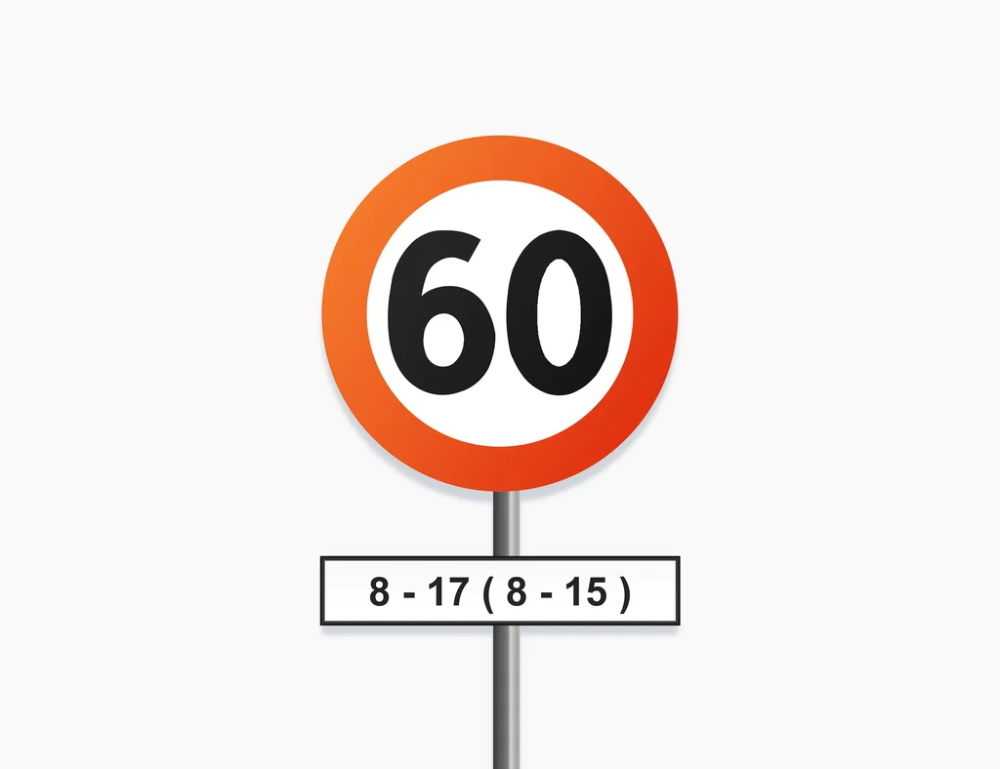{kind=link}
Kjøretøyet svinger mindre enn rattbevegelsen tilsier. Kjøretøyet svinger mindre enn rattbevegelsen tilsier.
Uoppmerksomhetstid er tiden som går fra en potensiell fare oppstår til du legger merke til den. Uoppmerksomhetstid er tiden som går fra en potensiell fare oppstår til du legger merke til den.
En sving hvor du ikke ser så langt på grunn av sikthindringer som skog, bygninger, svingens utforming o.l. En sving hvor du ikke ser så langt på grunn av sikthindringer som skog, bygninger, svingens utforming o.l.
Vandring betyr bevegelsen i bremsehendel, ratt eller andre ting. Full vandring betyr hele avstanden noe kan bevege seg. For en bremsehendel er dette hele spekteret mellom inaktivering til full aktivering – altså når bremsehendelen er trykket helt ned. Vandring betyr bevegelsen i bremsehendel, ratt eller andre ting. Full vandring betyr hele avstanden noe kan bevege seg. For en bremsehendel er dette hele spekteret mellom inaktivering til full aktivering – altså når bremsehendelen er trykket helt ned.
Vannplaning inntreffer når det kommer så mye vann mellom dekket og veien at dekket ikke får kontakt med veien. Dekket blir flytende på vannet og du mister kontrollen på kjøretøyet. Vannplaning inntreffer når det kommer så mye vann mellom dekket og veien at dekket ikke får kontakt med veien. Dekket blir flytende på vannet og du mister kontrollen på kjøretøyet.
Sannsynligheten for vannplaning øker med slitt dekkmønster og ved høyere hastigheter. Sannsynligheten for vannplaning øker med slitt dekkmønster og ved høyere hastigheter.
{kind=link}
En varsellinje består av lange gule/hvite streker med korte mellomrom (1/3-del av lengden på strekene). Linjen varsler at en forbikjøring er risikabel, ofte fordi du ikke vil kunne ha lang nok siktstrekning. En varsellinje består av lange gule/hvite streker med korte mellomrom (1/3-del av lengden på strekene). Linjen varsler at en forbikjøring er risikabel, ofte fordi du ikke vil kunne ha lang nok siktstrekning.
En varseltrekant er en reflekterende, rød, sammenfoldbar trekant som brukes til forvarsling ved trafikkulykker og -uhell. Ved plassering skal den settes slik at den blir godt synlig for de andre trafikantene. I tettbygd strøk må du vurdere forholdene for å bestemme hvor langt bak varseltrekanten skal settes. Utenfor tettbygd strøk bør varseltrekanten stå et sted mellom 150 og 250 meter bak bilen. En varseltrekant er en reflekterende, rød, sammenfoldbar trekant som brukes til forvarsling ved trafikkulykker og -uhell. Ved plassering skal den settes slik at den blir godt synlig for de andre trafikantene. I tettbygd strøk må du vurdere forholdene for å bestemme hvor langt bak varseltrekanten skal settes. Utenfor tettbygd strøk bør varseltrekanten stå et sted mellom 150 og 250 meter bak bilen.
Varsom – Kjøre på en måte som reduserer risiko for uhell og skader. Avpass farten etter forholdene og vis dine medtrafikanter på en tydelig måte, og i god tid, hva du ønsker å foreta deg. Varsom – Kjøre på en måte som reduserer risiko for uhell og skader. Avpass farten etter forholdene og vis dine medtrafikanter på en tydelig måte, og i god tid, hva du ønsker å foreta deg.
Med veigrep menes den evnen kjøretøyet har til å holde kontakt med kjørebanen i den retning føreren ønsker. En annen måte å uttrykke det på er at veigrep er det samme som friksjonen mellom dekket og veien. Veigrep brukes til å akselerere, bremse og svinge. Med veigrep menes den evnen kjøretøyet har til å holde kontakt med kjørebanen i den retning føreren ønsker. En annen måte å uttrykke det på er at veigrep er det samme som friksjonen mellom dekket og veien. Veigrep brukes til å akselerere, bremse og svinge.
Veiskulderen er den del av veien som ligger utenfor kantlinjen. Veiskulderen er altså ikke beregnet for motoriserte kjøretøy. Gående skal i utgangspunktet gå på veiskulderen og syklister kan velge å sykle på veiskulderen. Veiskulderen er den del av veien som ligger utenfor kantlinjen. Veiskulderen er altså ikke beregnet for motoriserte kjøretøy. Gående skal i utgangspunktet gå på veiskulderen og syklister kan velge å sykle på veiskulderen.
En del av en vei. Kan være alt fra den delen av veien du ser fremfor deg til en strekning mellom to steder. En del av en vei. Kan være alt fra den delen av veien du ser fremfor deg til en strekning mellom to steder.
Utformingen på alt av veier, trafikal infrastruktur, skilt og oppmerking. Utformingen på alt av veier, trafikal infrastruktur, skilt og oppmerking.
Veitrafikklovens bestemmelser gjelder all trafikk med motorvogn i Norge. Bestemmelsene gjelder også syklende og andre som ferdes i trafikken, når de er på vei eller område hvor det normalt kjører biler eller andre motorvogner. Veitrafikklovens bestemmelser gjelder all trafikk med motorvogn i Norge. Bestemmelsene gjelder også syklende og andre som ferdes i trafikken, når de er på vei eller område hvor det normalt kjører biler eller andre motorvogner.
Veitrafikkloven inneholder mange viktige bestemmelser som regulerer vår adferd i trafikken. Spesielt viktig er «Grunnregler for trafikk» som er hovedbestemmelsen om adferd i trafikken. Veitrafikkloven inneholder mange viktige bestemmelser som regulerer vår adferd i trafikken. Spesielt viktig er «Grunnregler for trafikk» som er hovedbestemmelsen om adferd i trafikken.
Veivisningsskilt gir opplysninger om stedsnavn, virksomheter, veiruter, valg av kjørefelt, valg av vei og avstand til reisemål. Veivisningsskilt gir opplysninger om stedsnavn, virksomheter, veiruter, valg av kjørefelt, valg av vei og avstand til reisemål.
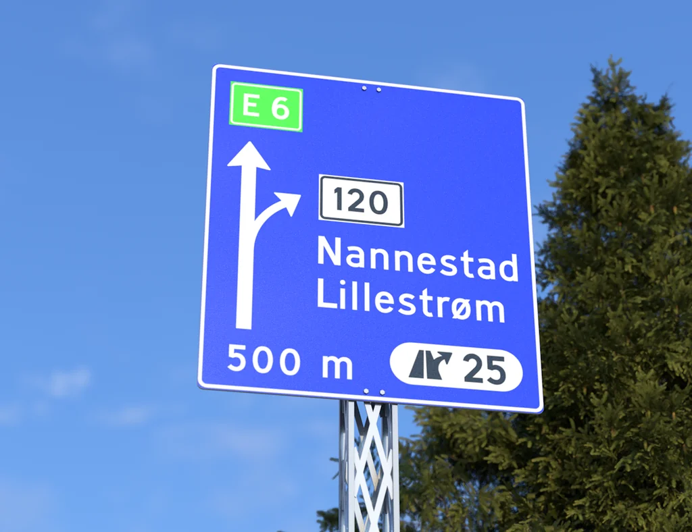{kind=link}
I noen land kjører man på venstre siden av veien. De mest kjente er Storbritannia, India, Australia og Japan. I noen land kjører man på venstre siden av veien. De mest kjente er Storbritannia, India, Australia og Japan.
En vikelinje er en tverrgående veimarkering bestående av trekanter som markerer stoppunkt for vikeplikt ved et veikryss. Vikelinjer benyttes også ved innkjøringen i rundkjøringer. En vikelinje er en tverrgående veimarkering bestående av trekanter som markerer stoppunkt for vikeplikt ved et veikryss. Vikelinjer benyttes også ved innkjøringen i rundkjøringer.
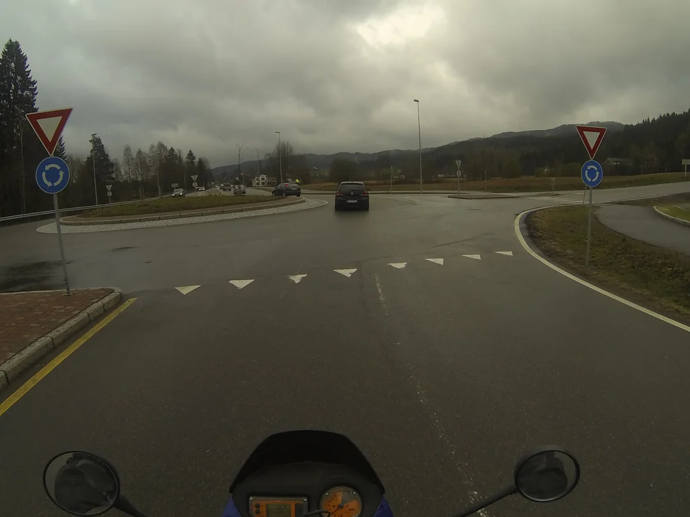{kind=link}
Vikeplikt er en plikt til ikke å hindre eller forstyrre trafikk som du har vikeplikt for. Har du vikeplikt har du også en plikt til å vise at du vil overholde din vikeplikt. Hvem som har rett til å kjøre og hvem som skal vike er definert i trafikkreglene. Vikeplikt er en plikt til ikke å hindre eller forstyrre trafikk som du har vikeplikt for. Har du vikeplikt har du også en plikt til å vise at du vil overholde din vikeplikt. Hvem som har rett til å kjøre og hvem som skal vike er definert i trafikkreglene.
Du får vikeplikt for andre trafikanter når du kommer fra følgende steder:Du får vikeplikt for andre trafikanter når du kommer fra følgende steder:
- Parkeringsplass Parkeringsplass
- Holdeplass Holdeplass
- Torg Torg
- Eiendom Eiendom
- Bensinstasjon Bensinstasjon
- Gågate Gågate
- Gatetun eller liknende område Gatetun eller liknende område
- Gårdsvei eller annen vei som ikke er åpen for alminnelig ferdsel Gårdsvei eller annen vei som ikke er åpen for alminnelig ferdsel
Vikeplikt- og forkjørsskilt regulerer vikeplikt i kryss eller på en strekning. Skiltene i denne kategorien har varierende utforming utfra hvilken oppgave de har. Vikeplikt- og forkjørsskilt regulerer vikeplikt i kryss eller på en strekning. Skiltene i denne kategorien har varierende utforming utfra hvilken oppgave de har.
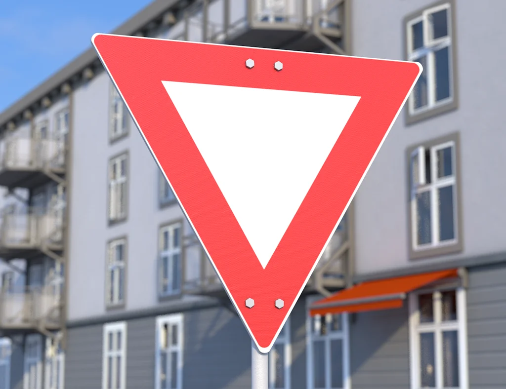{kind=link}
Dekk for vinterkjøring som har mønsterdybde 3 mm eller mer, er særskilt fremstilt for vinterkjøring og som er merket med M+S, MS, M&S, M-S eller «Mud and Snow». Kan både ha pigger eller være piggfrie. Dekk for vinterkjøring som har mønsterdybde 3 mm eller mer, er særskilt fremstilt for vinterkjøring og som er merket med M+S, MS, M&S, M-S eller «Mud and Snow». Kan både ha pigger eller være piggfrie.
I vinterperioden er det krav om minst 3 mm mønsterdybde, og det er tillatt å bruke piggdekk. I vinterperioden er det krav om minst 3 mm mønsterdybde, og det er tillatt å bruke piggdekk.
Vinterperioden er: Vinterperioden er:
- Nord-Norge: 16. okt. – 30. april Nord-Norge: 16. okt. – 30. april
- Resten av Norge: 1. nov. – mandagen etter 2. påskedag Resten av Norge: 1. nov. – mandagen etter 2. påskedag
Visuell kontroll betyr at man kontrollerer noe ved å se på det. Visuell kontroll betyr at man kontrollerer noe ved å se på det.
For eksempel kan billys kontrolleres visuelt ved at man skrur på bilen, går ut, og ser om de lyser. For eksempel kan billys kontrolleres visuelt ved at man skrur på bilen, går ut, og ser om de lyser.
Vognkort er et dokument som inneholder informasjon om et kjøretøy og dets eier. Vognkort er et dokument som inneholder informasjon om et kjøretøy og dets eier.
Del 2 inneholder hovedsakelig opplysninger knyttet til kjøretøyets og eierens identitet. I tillegg inneholder denne delen melding om eierskifte (salgsmelding). Denne delen bør oppbevares på et sikkert sted atskilt fra kjøretøyet. Del 2 inneholder hovedsakelig opplysninger knyttet til kjøretøyets og eierens identitet. I tillegg inneholder denne delen melding om eierskifte (salgsmelding). Denne delen bør oppbevares på et sikkert sted atskilt fra kjøretøyet.
Del 1 inneholder de samme opplysningene som del 2, men har i tillegg en del tekniske opplysninger om kjøretøyet. Denne delen skal være med i kjøretøyet under kjøring. Del 1 inneholder de samme opplysningene som del 2, men har i tillegg en del tekniske opplysninger om kjøretøyet. Denne delen skal være med i kjøretøyet under kjøring.
For å forsikre seg mot skader på egen bil må du tegne vognskadeforsikring. Den er kanskje bedre kjent under navnet kasko. For å forsikre seg mot skader på egen bil må du tegne vognskadeforsikring. Den er kanskje bedre kjent under navnet kasko.
Når flere kjøretøy er koblet sammen, kalles det et vogntog. Et kjøretøy er alt med vognkort. Eksempler på vogntog er lastebil med henger, personbil med henger og trekkbil med semitrailer. Når flere kjøretøy er koblet sammen, kalles det et vogntog. Et kjøretøy er alt med vognkort. Eksempler på vogntog er lastebil med henger, personbil med henger og trekkbil med semitrailer.
Tillatt vogntogvekt er hvor mye bil og tilhenger har lov til å veie til sammen. Tillatt vogntogvekt er hvor mye bil og tilhenger har lov til å veie til sammen.
Aktuell vogntogvekt er hvor mye bil og tilhenger faktisk veier. Aktuell vogntogvekt er hvor mye bil og tilhenger faktisk veier.